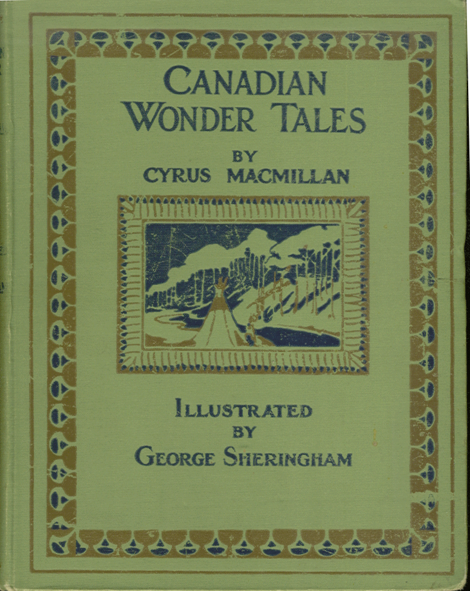

0
стр. з
0
сторінок

завантаження...

Сайрус МакМиллан
Канадские волшебные сказки и легенды
Адаптировал Андрей Удовиченко
Метод чтения Ильи Франка
Сontents
THE BAKER'S MAGIC WAND
(ВОЛШЕБНАЯ ПАЛОЧКА БУЛОЧНИКА).
ONCE very long ago in the days (однажды давным-давно в те дни) when Canada was owned by the French (когда Канада принадлежала французам; to be owned by smb. — принадлежать кому-либо: «быть владеемым кем-либо»; to own — владеть) there lived on the banks of a great river a wicked lawyer (жил да был на берегах большой реки злой адвокат; wicked — злой, нечестный) who was in love with a baker's wife (который был влюблен в жену булочника).
Canada ['kxnqdq], great ['greIt], wicked ['wIkId], lawyer ['lOIq]
ONCE very long ago in the days when Canada was owned by the French there lived on the banks of a great river a wicked lawyer who was in love with a baker's wife.
He tried in various ways (он пытался различными способами; various — различный, разнообразный; way — способ, путь) to get rid of the baker (избавиться от булочника; to get rid of smb. — избавиться, отделаться от кого-либо), but without success (но без успеха). They lived not far from the Seigneur (они жили недалеко от сеньора /землевладельца, вельможи/) who owned all the land around and was very powerful (который владел всей землей в округе и был очень могущественным; power — сила, мощь; могущество).
various ['veqrIqs], seigneur ['seInjq:], without [wI'Dqut], success [s(q)k'ses]
He tried in various ways to get rid of the baker, but without success. They lived not far from the Seigneur who owned all the land around and was very powerful.
Now, in front of the Seigneur's palace there was a great lake of more than twelve thousand acres (так вот, перед дворцом этого сеньора было огромное озеро размером более 12 000 акров; palace — дворец, роскошный особняк). One morning the lawyer went to the palace and knocked at the door (однажды утром: «одним утром» адвокат пошел ко дворцу и постучался в дверь).
front [frAnt], palace ['pxlIs], acre ['ekq], morning ['mO:nIN], knock [nOk]
Now, in front of the Seigneur's palace there was a great lake of more than twelve thousand acres. One morning the lawyer went to the palace and knocked at the door.
When the Seigneur came out, he said to him (когда сеньор вышел, он обратился к нему; to come out — выходить; to say — говорить, сказать), "Sire, there is a man not far from here (сир, тут недалеко есть человек) who boasts that in less than twice twenty-four hours (который хвастается, что меньше, чем за двое суток: «дважды двадцать четыре часа») he can change this lake into a beautiful meadow (он может превратить это озеро в прекрасный луг; to boast — хвастаться, гордиться; to change — изменять, превращать) covered with grass (покрытый травой) that would give hay enough for all your horses (который давал бы достаточно сена для всех ваших лошадей) and would be to the great advantage of the colony (и был бы очень полезен для всего нашего поселения; to be to advantage — приносить пользу; advantage — преимущество; colony — группа людей, проживающая на новой для них территории, колония)."
boast ['bqust], beautiful ['bju:tqfql], meadow ['medqu], cover ['kAvq], grass [grQ:s], advantage [qd'vQ:ntIG], colony ['kOlqnI]
When the Seigneur came out, he said to him, "Sire, there is a man not far from here who boasts that in less than twice twenty-four hours he can change this lake into a beautiful meadow covered with grass that would give hay enough for all your horses and would be to the great advantage of the colony."
Then the Seigneur said (после чего сеньор спросил), "Who is this man (кто этот человек)?" The lawyer answered (адвокат отвечал), "He is no less than the baker (он не кто иной, как булочник) who furnishes your household with bread (который снабжает ваше хозяйство хлебом; household — семейство, семья, домочадцы, домашние, хозяйство, двор, дом)." So the Seigneur said (и тогда сеньор сказал), "I will send for him (я пошлю за ним)."
answer ['Rnsq], baker ['beIkq], furnish ['fq:nIS], bread [bred]
Then the Seigneur said, "Who is this man?" The lawyer answered, "He is no less than the baker who furnishes your household with bread." So the Seigneur said, "I will send for him."
The lawyer went away (адвокат ушел), and the Seigneur sent a letter to the baker saying that he wanted to see him (а сеньор послал булочнику письмо, в котором говорилось, что он хочет видеть его; to send — посылать). The poor baker thought he was to get his pay for the bread (бедный булочник подумал, что должен получить = получит плату за хлеб; to think — думать; to get one’s pay — получить свою плату) he had provided for the Seigneur and all his servants and soldiers (которым он поставлял сеньору и всем его слугам и солдатам; to provide — снабжать, поставлять). So he was very glad, and went quickly to the palace and knocked at the door (поэтому он был очень рад, быстро пошел ко дворцу и постучался в дверь). When the Seigneur came out (когда сеньор вышел), he asked what was wanted of him (он /булочник/ спросил, что ему угодно: «что было угодно от него»).
poor ['puq], thought [TO:t], servant ['sq:vqnt], soldier ['squlGq], palace ['pxlIs]
The lawyer went away, and the Seigneur sent a letter to the baker saying that he wanted to see him. The poor baker thought he was to get his pay for the bread he had provided for the Seigneur and all his servants and soldiers. So he was very glad, and went quickly to the palace and knocked at the door. When the Seigneur came out, he asked what was wanted of him.
The Seigneur answered that he had heard of his boast (сеньор ответил, что он слышал о его хвастовстве; to hear of /about/ — услышать о чем-либо; to boast — хвастаться) that in less than twice twenty-four hours he could change all the lake into a beautiful meadow (что меньше чем за двое суток: «дважды двадцать четыре часа» он может превратить это озеро в прекрасный луг) covered with grass and clover (покрытый травой и клевером; to cover — покрывать, закрывать) that would feed all the Seigneur's horses (который мог бы накормить всех лошадей сеньора) and would be a great advantage to the colony (и принес бы большую пользу всему поселению; advantage — выгода, польза, преимущество; colony — сообщество, поселение, группа людей). Now, unless within twice twenty-four hours the lake was changed into a meadow (так вот, если через двое суток озеро не превратится: «не будет превращено» в луг; unless — если не; to change into — превращать в/изменять), the baker should be hanged before the door of the palace (булочника повесят: «булочник будет повешен» перед воротами дворца; to hang — вешать).
hour [aVq], colony ['kOlqnI], unless [qn'les]
The Seigneur answered that he had heard of his boast that in less than twice twenty-four hours he could change all the lake into a beautiful meadow covered with grass and clover that would feed all the Seigneur's horses and would be a great advantage to the colony. Now, unless within twice twenty-four hours the lake was changed into a meadow, the baker should be hanged before the door of the palace.
Then the Seigneur turned away and the baker went out discouraged (потом сеньор отвернулся = ушел по своим делам и булочник вышел /из дворца/, поникнув головой; discouraged — унылый, обескураженный, удрученный; courage — смелость) for he did not know what to do (потому что не знал, что ему делать). He walked off into the woods and sat down on a log to weep (он отправился в лес, сел на бревно и заплакал: «сел плакать»; to walk off — уходить, удаляться; log — бревно; to weep — плакать). After a long time (прошло много времени: «после долгого времени») an old woman came along (и какая-то старушка проходила мимо; to come along — случайно приходить) and asked what was the matter (и спросила его, что случилось; what’s the matter? — в чем дело?, что случилось?, что не так?).
discourage [dIs'kArIG], know [nqu], after ['Q:ftq], woman ['wumqn]
Then the Seigneur turned away and the baker went out discouraged, for he did not know what to do. He walked off into the woods and sat down on a log to weep. After a long time an old woman came along and asked what was the matter.
He said he was very miserable; he was going to be hanged in twice twenty-four hours (он сказал, что он несчастен = в отчаянии и что его собираются повесить: «он будет повешен» через двое суток; to be miserable — быть несчастным); for the Seigneur had commanded him to change all the lake into a meadow (потому что сеньор приказал ему превратить все озеро в луг), covered with grass and clover, and he was not able to do it (покрытый травой и клевером, а он не может: «не был способен» это сделать). Now, this old woman was a good fairy in disguise (так вот, эта старушка была переодетой доброй феей; fairy — фея, добрая волшебница; in disguise — переодетый, замаскированный) and when the baker had done speaking she told him not to be troubled but to go to sleep (и когда булочник закончил свой рассказ: «закончил говорить», она сказала ему не беспокоиться: «не быть обеспокоенным», а идти и лечь спать; to be troubled — волноваться, беспокоиться).
miserable ['mIz(q)r(q)bl], command [kq'mQ:nd], clover ['klquvq], fairy ['feqrI], disguise [dIs'gaIz] troubled [trAbld]
He said he was very miserable; he was going to be hanged in twice twenty-four hours; for the Seigneur had commanded him to change all the lake into a meadow, covered with grass and clover, and he was not able to do it. Now, this old woman was a good fairy in disguise and when the baker had done speaking she told him not to be troubled but to go to sleep.
She gave him a wand just like a broken stick (она дала ему волшебную палочку, которая была похожа на сломанный прутик; to give — давать; wand — /волшебная/ палочка, прутик), which she told him to wave before he slept (и сказала взмахнуть ею прежде, чем он уснет; to tell — говорить; to sleep — спать); it had great power, she said (она сказала, что палочка обладает огромной силой), and while he slept it would bring to pass whatever he desired (и что пока он будет спать, она выполнит все, что он пожелает; to bring to pass — осуществлять/приводить в исполнение; to desire — жаждать, сильно желать).
wand [wOnd], power ['pauq], pass [pQ:s], desire [dI'zaIq]
She gave him a wand just like a broken stick, which she told him to wave before he slept; it had great power, she said, and while he slept it would bring to pass whatever he desired.
So he waved the wand and went to sleep (так что он взмахнул палочкой и уснул; to wave — размахивать, махать; to go to sleep — засыпать). When he had slept an hour, he was awakened by the smell of hay (когда он проспал час, он был разбужен запахом сена), and when he looked about him (и когда он осмотрелся вокруг; to look about — оглядываться по сторонам, осматриваться), he saw that the lake was all gone (он увидел, что озеро /полностью/ исчезло), and that there was only a small river that ran through the middle of a beautiful meadow down to the great river not far away (и был только небольшая речка, которая бежала среди прекрасного луга и неподалеку впадала в большую реку; to run through — пробегать через, протекать через).
awaken [q'weIk(q)n], when [wen], through [Tru:], river ['rIvq]
So he waved the wand and went to sleep. When he had slept an hour, he was awakened by the smell of hay, and when he looked about him, he saw that the lake was all gone and that there was only a small river that ran through the middle of a beautiful meadow down to the great river not far away.
The good fairy was still by his side (добрая фея все еще была рядом; to be by smb.’s side — быть рядом с кем-либо). She told him to go to the Seigneur and show him what he had done (она сказала ему идти к сеньору и показать ему, что он сделал). He went to the palace (он пошел ко дворцу), and when he came near (и когда он подошел ближе), he saw the Seigneur looking out of the window at the meadow, and all the men and horses at work making hay (он увидел сеньора, выглядывающего из окна на луг и всех людей и лошадей, занятых уборкой сена: «при работе делающих сено»).
near ['nIq], meadow ['medqu], horse [hO:s]
The good fairy was still by his side. She told him to go to the Seigneur and show him what he had done. He went to the palace, and when he came near, he saw the Seigneur looking out of the window at the meadow, and all the men and horses at work making hay.
He knocked at the door (он постучался в дверь) and when the Seigneur came downstairs (и когда сеньор спустился /к нему/ по лестнице; downstairs — вниз /по ступенькам/, низ, нижний этаж здания, нижняя часть здания), he asked him if he was satisfied (он спросил, доволен ли он; satisfied — удовлетворенный, довольный; to satisfy — удовлетворять). The Seigneur said he was not satisfied (сеньор сказал, что он недоволен), because the river had been left running through the middle of the meadow (потому что в центре луга осталась река; to run — бежать; течь). The baker told the Seigneur that the river had been left to provide water for the animals and to help in making hay (булочник сказал сеньору, что реку он оставил, чтобы животным было где попить: «река была оставлена, чтобы обеспечить животных водой» и чтобы помочь в заготовке сена), because there was so much hay (потому что сена было так много) that all the horses in the land could not draw it (что все лошади в округе не могут: «не могли» свезти его; to draw — тащить) and it would have to be brought in boats (и его надо будет перевозить на лодках: «оно должно будет быть перевозимо…»). Then the Seigneur was satisfied and sent the baker away (сеньору это понравилось: «тогда сеньор был доволен» и он отослал булочника /домой/; to send away — отсылать; away — прочь).
downstairs ['daun'steqz], satisfied ['sxtIsfaId], provide [prq'vaId], draw [drL]
He knocked at the door, and when the Seigneur came downstairs, he asked him if he was satisfied. The Seigneur said he was not satisfied, because the river had been left running through the middle of the meadow.
The baker told the Seigneur that the river had been left to provide water for the animals and to help in making hay, because there was so much hay that all the horses in the land could not draw it and it would have to be brought in boats. Then the Seigneur was satisfied and sent the baker away.
Soon the wicked lawyer came again (вскоре снова пришел злой адвокат), and the Seigneur showed him the meadow and the men and women and horses making hay (и сеньор показал ему луг и мужчин, и женщин, и лошадей, заготавливающих сено). The lawyer was much surprised to see all this, but he did not say so (адвокат был очень удивилен, когда увидел все это, но не подал и виду: «но не сказал так»).
men [men], women ['wImIn], surprised [sq'praIzd]
Soon the wicked lawyer came again, and the Seigneur showed him the meadow and the men and women and horses making hay. The lawyer was much surprised to see all this, but he did not say so.
Instead, he told the Seigneur (вместо этого он сказал сеньору) that he had no doubt the baker could do a great deal more than that (что он не сомневается, что булочник мог бы сделать гораздо больше этого; to have no doubt — не сомневаться: «не иметь сомнения»; a great deal more — гораздо больше); the baker, he said, had boasted that he could make a "tiens-bon-la" for the Seigneur (этот булочник, сказал он, хвастался, что он мог бы сделать «держи-ка там крепко» /франц./ для сеньора) that would be worth a great deal more than the meadow (что было бы гораздо ценнее, чем луг; worth — цена, стоимость, ценность, стоящий) and would be a great advantage to the colony (и принесло бы огромную пользу всему поселению; advantage — выгода, польза, преимущество).
instead [In'sted], doubt ['daut], worth [wq:T], advantage [qd'vRntIG]
Instead, he told the Seigneur that he had no doubt the baker could do a great deal more than that; the baker, he said, had boasted that he could make a "tiens-bon-la" for the Seigneur that would be worth a great deal more than the meadow and would be a great advantage to the colony.
"What is a 'tiens-bon-la' (что такое «держи-ка там крепко»)?" asked the Seigneur (спросил сеньор). "I do not know (я не знаю)," answered the lawyer (отвечал адвокат); "but the baker said he could make one (но булочник сказал, что может это сделать)." "I will send for him (я пошлю за ним)," said the Seigneur (сказал сеньор). So he sent for the baker, who was just making his bread (и: «так /что/» он послал за булочником, который в это время пек хлеб; just — как раз).
ask [Q:sk], know [nqu], lawyer ['lOIq], bread [bred]
"What is a 'tiens-bon-la'?" asked the Seigneur. "I do not know," answered the lawyer; "but the baker said he could make one." "I will send for him," said the Seigneur. So he sent for the baker, who was just making his bread.
When he had put the bread into the oven (поставив хлеб в печь: «когда он поставил хлеб в печь»; to put — помещать, класть, ставить), he went to the palace and knocked again (он пошел во дворец и снова постучался), and the Seigneur came to the door (и сеньор вышел на порог: «подошел к двери»). The Seigneur said (сеньор сказал): "I have heard that you boasted that you can make a 'tiens-bon-la' (слышал я, что ты хвастался, что можешь сделать «держи-ка там крепко») that would be worth more than the meadow (что было бы гораздо ценнее, чем луг) and a great advantage to the colony (и огромной пользой нашему поселению).
oven ['Av(q)n], palace ['pxlIs], worth [wq:T]
When he had put the bread into the oven, he went to the palace and knocked again, and the Seigneur came to the door. The Seigneur said: "I have heard that you boasted that you can make a 'tiens-bon-la' that would be worth more than the meadow and a great advantage to the colony.
Now you shall go home and make it (сейчас же иди домой и сделай это), and unless you bring it to me in twice twenty-four hours (и если ты не принесешь мне это через два дня), you shall be hanged before the palace gate (тебя повесят: «ты будешь повешен» перед воротами дворца; gate — ворота)." The baker asked, "What is a 'tiens-bon-la' (булочник спросил, что такое «держи-ка там крепко»)?" The Seigneur said, "I do not know, but I must have one within twice twenty-four hours (я не знаю, но это должно быть у меня через два дня)." Then he went into his palace again (после этого он ушел во дворец /опять/; to go into — входить).
hang [hxN], unless [qn'les], within [wI'DIn], again [q'ge(I)n]
Now you shall go home and make it, and unless you bring it to me in twice twenty-four hours, you shall be hanged before the palace gate." The baker asked, "What is a 'tiens-bon-la'?" The Seigneur said, "I do not know, but I must have one within twice twenty-four hours." Then he went into his palace again.
The poor baker went away more sorrowful than before (бедный булочник ушел еще более горестный = расстроенный, чем раньше; poor — бедный; sorrowful — печальный, убитый горем, скорбный; sorrow — печаль, скорбь). He had no idea of what a "tiens-bon-la" was (он понятия не имел, что такое «держи-ка там крепко»; idea — идея, мысль, план); but yet he knew he should be hanged unless he made one within twice twenty-four hours (но, тем не менее, он знал, что его повесят через двое суток, если он этого не сделает; to know — знать).
sorrowful ['sOrqful], before [bI'fO:], idea [aI'dIq]
The poor baker went away more sorrowful than before. He had no idea of what a "tiens-bon-la" was; but yet he knew he should be hanged unless he made one within twice twenty-four hours.
He went out into the forest again (он опять пошел в лес; to go out — выходить) and sat down on the same log as he had sat on before (и сел на то же бревно, на котором сидел до этого; to sit — сидеть; садиться), and wept as hard as he could (и горько заплакал: «и заплакал так сильно, как мог»; to weep — плакать, рыдать). When he had cried himself to sleep (когда он проплакал столько, что уснул = плакал-плакал, да так и уснул: «отплакал себя ко сну»), the good old fairy came again and waked him up and asked him what was the matter (снова появилась добрая старая фея, разбудила его и спросила, что случилось: «в чем дело»).
forest ['fOrIst], same ['seIm], log [lOg], hard [hRd], matter ['mxtq]
He went out into the forest again and sat down on the same log as he had sat on before, and wept as hard as he could. When he had cried himself to sleep, the good old fairy came again and waked him up and asked him what was the matter.
He told her that he should certainly be hanged this time (он сказал ей, что на этот раз его точно повесят; to tell — говорить, рассказывать; certainly — опеределенно, точно, без сомнения; time — время, срок; раз), for he had been ordered to make a "tiens-bon-la" for the Seigneur (потому что ему приказали сделать «держи-ка там крепко» для сеньора), and he did not know what it was (а он не знает, что это такое). Then the fairy said (после чего фея сказала), "It is only the wicked lawyer who is in love with your wife and wants to get rid of you (все дело в злом адвокате: «это только злой адвокат», который любит твою жену и хочет отделаться о тебя).
should [Sud], certainly ['sq:tnlI], hang [hxN], know [nqu]
He told her that he should certainly be hanged this time, for he had been ordered to make a "tiens-bon-la" for the Seigneur, and he did not know what it was. Then the fairy said, "It is only the wicked lawyer who is in love with your wife and wants to get rid of you.
You must do what I tell you and the lawyer will be punished (ты должен сделать, что я тебе скажу, и адвокату не поздоровится: «адвокат будет наказан»; to punish — наказывать), for we shall make a "tiens-bon-la" that will satisfy the Seigneur (потому что мы сделаем «держи-ка там крепко», которое понравится сеньору; to satisfy — удовлетворять, доставлять удовлетворение). Go to your home and tell your wife (иди домой и скажи своей жене) that you are commanded to make a 'tiens-bon-la' for the Seigneur (что тебе приказали сделать «держи-ка там крепко» для сеньора; to command — приказывать; заказывать) and that you have nothing to make it of (а тебе не из чего это сделать).
punish ['pAnIS], satisfy ['sxtIsfaI], command [kq'mRnd], nothing ['nATIN]
You must do what I tell you and the lawyer will be punished, for we shall make a "tiens-bon-la" that will satisfy the Seigneur. Go to your home and tell your wife that you are commanded to make a 'tiens-bon-la' for the Seigneur and that you have nothing to make it of.
Tell her to put two days' provisions in a bag for you (скажи ей положить в мешок для тебя провизии на два дня; provisions — продовольствие; bag — мешок, сумка), and when she has them all ready (и когда она все приготовит: «имеет готовым»), go to your room and take the latch off the window (отправляйся в свою комнату и открой щеколду окна; to take off — убирать, поднимать, открывать; latch — щеколда, засов, защелка, задвижка, шпингалет). Then say good-bye to your wife (потом попрощайся с женой: «скажи до свидания»), and walk about the country until it is dark (и поброди по округе, пока не стемнеет; country — деревня, сельская местность). As soon as you are gone (как только ты уйдешь) your wife will send for the lawyer (твоя жена пошлет за адвокатом) and invite him to supper (и пригласит его на ужин).
provision [prq'vIZ(q)n], ready ['redI], country ['kAntrI], gone [gOn], invite [In'vaIt]
Tell her to put two days' provisions in a bag for you, and when she has them all ready, go to your room and take the latch off the window. Then say good-bye to your wife, and walk about the country until it is dark. As soon as you are gone your wife will send for the lawyer and invite him to supper.
Before he comes (до того, как он придет), and after it is dark (и после того, как стемнеет; dark — темно), you must come back to your house (ты должен вернуться к своему дому) and get in at the window and hide yourself under the bed (залезть /внутрь/ через окно и спрятаться под кроватью; to hide — прятать/ся/, скрывать/ся/). Now, the lawyer will not eat without first washing his hands (так вот, адвокат не будет есть сперва, не вымыв руки). When he comes, your wife will send him into the room where you are hiding to wash (когда он придет, твоя жена пошлет его в комнату, где ты прячешься, помыть руки), and when he takes hold of the wash-basin you must cry out, "tiens-bon-la (и, когда он возьмется за рукомойник, ты должен выкрикнуть: «держи-ка там крепко»; to take hold of smth. — браться, хвататься, держаться; to cry out — выкрикивать)."
window ['wIndqu], without [wI'Daut], wash-basin ['wOS"beIsn]
Before he comes, and after it is dark, you must come back to your house and get in at the window and hide yourself under the bed. Now, the lawyer will not eat without first washing his hands. When he comes, your wife will send him into the room where you are hiding to wash, and when he takes hold of the wash-basin you must cry out, "tiens-bon-la."
Take this wand that I will give you (я тебе дам волшебную палочку: «возьми эту волшебную палочку, которую я тебе дам») and anything you wave it at when you cry 'tiens-bon-la' (и все, на что ты взмахнешь ею со словами «держи-ка там крепко»; to cry — кричать, вопить) will hold fast to whatever it is touching (прилепится к тому, кто его трогает: «крепко схватит того»; to hold fast — крепко держать/ся/; to touch — трогать, касаться)." Then she gave him another wand and went her way (и она дала ему еще одну палочку и пошла своей дорогой; to give — давать; another — еще один, другой; to go one’s way — идти своей дорогой).
fast [fQ:st], touch [tAtS], wand [wOnd], another [q'nADq]
Take this wand that I will give you and anything you wave it at when you cry 'tiens-bon-la' will hold fast to whatever it is touching." Then she gave him another wand and went her way.
The baker did as the fairy had told him (булочник сделал, как ему сказала фея; to tell — говорить; приказывать), and his wife was very glad to learn that he was going away (а его жена была очень рада узнать, что он собирается уехать; to learn — узнавать, изучать); and she packed up a large bag of provisions (и она собрала ему большой мешок с едой; provisions — провизия, запасы провианта; provision — обеспечение, предоставление, снабжение) and sent him off (и проводила его; to pack up smth. — упаковывать, собирать что-либо; to send off — отсылать, провожать, устраивать проводы). As soon as he was out of the house (как только он ушел из дома; to go out — выходить) she sent a note to the lawyer (она послала адвокату записку) telling him that her husband was gone away for two days (в которой говорилось: «говоря ему», что ее мужа два дня не будет дома: «муж ушел на два дня») and that she would like to have him come to supper (и что она хотела бы, чтобы он пришел на ужин).
learn [lq:n], provision [prq'vIZ(q)n], husband ['hAzbqnd], come [kAm]
The baker did as the fairy had told him, and his wife was very glad to learn that he was going away; and she packed up a large bag of provisions and sent him off. As soon as he was out of the house she sent a note to the lawyer telling him that her husband was gone away for two days and that she would like to have him come to supper.
The baker walked around the country until it was dark (булочник бродил по деревне, пока не стемнело; to walk around — бродить без цели; around — вокруг), and then came back and hid himself under the bed (а потом вернулся и спрятался под кроватью; to come back — возвращаться: «приходить обратно»). His wife told the servant to set the table and prepare a nice supper (его жена сказала служанке накрыть на стол и приготовить хороший ужин), and then she went to get ready to receive the lawyer (а потом пошла подготовиться к приему адвоката; to receive — принимать, получать). Soon the lawyer arrived (вскоре пришел адвокат; to arrive — приходить, приезжать).
country ['kAntrI], servant [sq:v(q)nt], prepare [prI'peq], receive [rI'si:v], arrive [q'raIv]
The baker walked around the country until it was dark, and then came back and hid himself under the bed. His wife told the servant to set the table and prepare a nice supper, and then she went to get ready to receive the lawyer. Soon the lawyer arrived.
The servant showed him into a room (служанка провела его в комнату; to show into — ввести, провести /в комнату и т. п./) where he might wash his hands after his day's work (где он мог бы помыть руки после рабочего дня: «дневной работы») before he sat down to his meal (прежде чем садиться за еду; to sit down — садиться; meal — еда, трапеза). The baker was under the bed in the room (булочник был в комнате под кроватью). There was some water that was not very clean in the wash-basin (в рукомойнике была не очень чистая вода; wash-basin — таз для умывания), and when the lawyer took hold of the basin to throw the water out (и когда адвокат взялся за таз, чтобы выплеснуть воду; to take hold — браться, хвататься; to throw out — выбрасывать, выплескивать), the baker, who was under the bed (булочник, который был под кроватью), waved his wand and cried out "tiens-bon-la," (взмахнул своей волшебной палочкой и выкрикнул «держи-ка там крепко») and the lawyer's hands stuck to the basin so that he could not let go (и руки адвоката прилипли к тазу так, что он не мог оторваться: «не мог уйти»; to stick — прилипать, присасываться, приклеиваться) and the basin stuck to the wash-stand (а таз прилип к умывальнику).
meal [mi:l], basin ['beIsn], stuck [stAk]
The servant showed him into a room where he might wash his hands after his day's work before he sat down to his meal. The baker was under the bed in the room. There was some water that was not very clean in the wash-basin, and when the lawyer took hold of the basin to throw the water out, the baker, who was under the bed, waved his wand and cried out "tiens-bon-la," and the lawyer's hands stuck to the basin so that he could not let go and the basin stuck to the wash-stand.
He called out to the servant to come and help him (он позвал служанку прийти и помочь ему), but she was busy about the supper and did not hear him (но она была занята приготовлением к ужину и не услышала его; to be busy — быть занятым). So then he cried out as loud as he could, "Madame, Madame (тогда он закричал так громко, как только мог: «мадам, мадам»)." When the baker's wife heard him (когда жена булочника услышала его), she was dreadfully frightened and ran in to see what was the matter (она ужасно испугалась и побежала посмотреть, что случилось; dreadfully — ужасно, страшно, чудовищно; dread — страх, ужас; to be frightened — испугаться; to run into — вбегать; what’s the matter? — что случилось?, в чем дело?).
busy ['bIzI], heard [hq:d], dreadfully ['dredfulI], frightened ['fraItnd]
He called out to the servant to come and help him, but she was busy about the supper and did not hear him. So then he cried out as loud as he could, "Madame, Madame." When the baker's wife heard him, she was dreadfully frightened and ran in to see what was the matter.
When she found the lawyer stuck to the wash-stand (когда она обнаружила, что адвокат приклеился к умывальнику; to find — находить; to stick — прилипать) which was very large and heavy (который был очень большим и тяжелым), she took hold of him with both hands to pull him away (она схватила его двумя руками, чтобы оторвать его; to take hold — хватать, браться; to pull away — вырывать, выдергивать; to pull — тянуть). Then her husband cried out from under the bed "tiens-bon-la," and the wife could not let go the lawyer (после чего ее муж выкрикнул из под кровати «держи-ка там крепко» и жена уже не могла оторваться от адвоката: «отпустить адвоката»; to let smb. go — отпускать кого-либо, позволять кому-либо уйти).
large [lQ:G], heavy ['hevI], which [wItS], pull [pul]
When she found the lawyer stuck to the wash-stand, which was very large and heavy, she took hold of him with both hands to pull him away. Then her husband cried out from under the bed "tiens-bon-la," and the wife could not let go the lawyer.
Then the baker went out and called in some of his friends (потом булочник вышел и позвал в дом нескольких своих друзей; to go out входить; to call in — приглашать /зайти/), and they ate the supper and drank the wine (и они съели ужин и выпили вино; to drink — пить) that had been prepared for the lawyer who was stuck to the wash-stand (которые были приготовлены для адвоката, который прилип к умывальнику; to prepare — приготавливать, подготавливать), and the wife who could not let go the lawyer (и для жены /булочника/, которая не могла отойти от адвоката: «отпустить адвоката»).
call [kO:l], friend [frend], prepare [prI'peq], wash-stand ['wOS"stxnd]
Then the baker went out and called in some of his friends, and they ate the supper and drank the wine that had been prepared for the lawyer who was stuck to the wash-stand, and the wife who could not let go the lawyer.
When morning came (когда наступило утро), the baker took the wand that the fairy had given him (булочник взял волшебную палочку, которую ему дала фея) and told his wife and the lawyer (и сказал жене и адвокату) that if they wanted to get loose they must do as he told them (что если они хотят освободиться, они должны делать все, что он им скажет; to get loose — освободиться; loose — свободный, непривязанный, неприкрепленный). With his wand he loosened the basin from the wash-stand (с помощью волшебной палочки он открепил таз от умывальника; to loose — отпускать, откреплять, разъединять, ослаблять). Then he made them go out into the street (затем он приказал им выйти на улицу; to make smb. do smth. — заставлять, принуждать кого-либо сделать что-либо), and he started them towards the Seigneur's palace (и повел их ко дворцу сеньора; to start — начинать, браться, отправляться, пускаться в путь, трогаться).
loosen ['lu:s(q)n], start [stRt], towards [tq'wO:dz]
When morning came, the baker took the wand that the fairy had given him and told his wife and the lawyer that if they wanted to get loose they must do as he told them. With his wand he loosened the basin from the wash-stand. Then he made them go out into the street, and he started them towards the Seigneur's palace.
As soon as they all came out into the light (как только они вышли на свет), the baker saw that there was a hole in his wife's dress (булочник увидел, что на платье жены была дырка), so he pulled some grass and twisted it into a wisp and filled up the hole (поэтому он сорвал немного травы, сложил ее в пучок и заткнул дыру; to pull — рвать, тянуть; to twist — скручивать, сплетать). Presently they came to a cow (некоторое время спустя они проходили мимо коровы: «они подошли к корове»; presently — вскоре, ныне, сегодня, сейчас, теперь; to come — приходить) that was feeding by the side of the road (которая паслась у дороги; to feed — питаться, кормиться, есть /о животных/; side — сторона).
light ['laIt], presently ['prez(q)ntlI], cow [kau]
As soon as they all came out into the light, the baker saw that there was a hole in his wife's dress, so he pulled some grass and twisted it into a wisp and filled up the hole. Presently they came to a cow that was feeding by the side of the road.
There was not much grass there and the cow was hungry (травы вокруг было немного, и корова была голодна; hunger — голод), so when she saw the wisp of grass sticking from the woman's dress she began to eat it (поэтому когда она увидела пучок травы, торчащий из платья женщины, она начала его есть; to see — видеть; to begin — начинать); but the baker waved his wand and cried "tiens-bon-la" (но булочник взмахнул своей палочкой и крикнул «держи-ка там крепко»; to wave — махать) and the cow's teeth stuck in the grass and the grass stuck to the dress (и зубы коровы прилипли к траве, а трава прилипла к платью; to stick — прилипать). They all went along until they came to a house where there was a large dog on the doorstep (они все шли и шли: «они все продолжали идти», пока не подошли к дому, на пороге которого сидела большая собака; to go along — идти дальше, продолжать путь).
hungry ['hANgrI], began [bI'gxn], teeth [ti:T], along [q'lON], doorstep ['dO:"stqp]
There was not much grass there and the cow was hungry, so when she saw the wisp of grass sticking from the woman's dress she began to eat it; but the baker waved his wand and cried "tiens-bon-la" and the cow's teeth stuck in the grass and the grass stuck to the dress. They all went along until they came to a house where there was a large dog on the doorstep.
When the dog saw the people (когда собака увидела этих людей = эту странную процессию), he jumped over the fence to see where they were going (она перепрыгнула через забор, чтобы посмотреть, куда они все идут; to jump over — перепрыгивать; over — через; fence — забор, изгородь). The cow gave him a switch with her tail across the nose (корова стегнула хвостом собаке по носу; to give a switch — ударять, стегать прутом или хлыстом) the baker cried "tiens-bon-la," and the dog stuck to the cow's tail and went along with the rest (булочник крикнул «держи-ка там крепко», и собака прилипла к коровьему хвосту и пошла вслед за остальными; rest — остаток,остальная часть).
people [pi:pl], jump [GAmp], switch [swItS], across [q'krOs]
When the dog saw the people, he jumped over the fence to see where they were going. The cow gave him a switch with her tail across the nose, the baker cried "tiens-bon-la," and the dog stuck to the cow's tail and went along with the rest.
When the old woman who owned the dog saw him going off in this manner (когда старушка — хозяйка пса: «которая владела собакой» увидела, что ее пса уводят у нее на глазах: «таким /странным/ образом»; to own smth. — владеть чем-либо, in this manner — таким образом: «в такой манере»), she was very angry (она очень рассердилась; anger — гнев, ярость, крайнее раздражение); she called him but he would not come (она позвала его, но он к ней не захотел пойти); then she ran out with the broom that she was using to sweep the floor (тогда выбежала с метлой, которой подметала пол; to run out — выбегать; broom — метла, веник; to use — использовать, пользоваться, применять; to sweep — подметать), and began to beat the dog to drive him home (и начала бить пса, чтобы загнать его домой; to begin — начинать; to drive — гнать).
broom [brum], floor [flO:], angry ['xngrI], would [wud], use /глагол/ [ju:z]
When the old woman who owned the dog saw him going off in this manner, she was very angry; she called him but he would not come; then she ran out with the broom that she was using to sweep the floor, and began to beat the dog to drive him home.
But the baker cried out "tiens-bon-la" again (но булочник опять выкрикнул «держи-ка там крепко») and so the broom stuck to the dog and the old woman could not let go the broom (и метла прилипла к собаке, а старушка не могла отпустить метлу). The old woman's husband was quite lame (муж старушки сильно хромал: «был довольно хромым»; lame — хромой, увечный); he ran after his wife, limping along with a stick (он побежал за своей женой, опираясь на палку: «хромая с палкой»; to run after smb. — бежать, гнаться за кем-либо). He could not go very fast (быстро идти/бежать у него не получалось), but he went as well as he could to see what his old woman was beating the dog for (но бежал изо всех сил: «так хорошо, как только мог», чтобы посмотреть, за что же старушка бьет собаку; to beat — бить, колотить).
husband ['hAzbqnd], fast [fQ:st], woman ['wumqn]
But the baker cried out "tiens-bon-la" again and so the broom stuck to the dog and the old woman could not let go the broom. The old woman's husband was quite lame; he ran after his wife, limping along with a stick. He could not go very fast, but he went as well as he could to see what his old woman was beating the dog for.
When he came up (когда он /их/ догнал; to come up — подходить, приближаться, to come up with smb. — поравняться, догнать), he took hold of the woman's dress to pull her away (он ухватился за платье женщины, чтобы оттащить ее; to take hold of smth. — хвататься за что-либо: «брать ухват/хватку чего-либо»), but the baker cried out "tiens-bon-la" again and the lame farmer had to go limping along with the others (но булочник вновь крикнул «держи-ка там крепко», и хромому фермеру пришлось ковылять вслед за остальными; to have to do smth. — быть должным что-либо сделать).
farmer ['fRmq:], again [q'ge(I)n], others ['ADqz]
When he came up, he took hold of the woman's dress to pull her away, but the baker cried out "tiens-bon-la" again and the lame farmer had to go limping along with the others.
So they all went to the Seigneur's palace (так они все пошли ко дворцу сеньора) — the lawyer with the heavy wash-basin (адвокат с тяжелым умывальником), the woman holding on to the lawyer (женщина, вцепившаяся в адвоката), the cow trying to eat the wisp of hay (корова, пытающаяся съесть пучок сена), the dog barking at the cow and sticking to her tail (пес, лающий на корову и прилипший к ее хвосту; to bark at smb. — лаять на кого-либо), the old woman with her broom (старушка с ее метлой), and the lame farmer limping along with his stick (и хромой фермер, ковыляющий со своей палкой).
cow ['kau], heavy ['hevI], broom [bru:m]
So they all went to the Seigneur's palace—the lawyer with the heavy wash-basin, the woman holding on to the lawyer, the cow trying to eat the wisp of hay, the dog barking at the cow and sticking to her tail, the old woman with her broom, and the lame farmer limping along with his stick.
The baker knocked at the door and when the Seigneur opened it he said (булочник постучал в дверь, и когда сеньор открыл ее, он сказал): "Oh, my Seigneur, you ordered a 'tiens-bon-la' (о, мой господин, вы заказали «держи-ка там крепко») and I have brought you one (и вот, оно перед вами: «и я принес вам одно»), the best that was ever made (самое лучшее, которое было когда-либо сделано). If you will be pleased to try it (если вы соизволите попробовать его; to try — попробовать, испытать), I hope you will be content (я надеюсь, вы будете довольны; to be content with smth. — быть довольным чем-либо)."
seigneur ['seInjq:], brought [brO:t], pleased [pli:zd], content [kqn'tent]
The baker knocked at the door and when the Seigneur opened it he said: "Oh, my Seigneur, you ordered a 'tiens-bon-la' and I have brought you one, the best that was ever made. If you will be pleased to try it, I hope you will be content."
The Seigneur took hold of the basin to take it away from the lawyer (сеньор схватился за умывальник, чтобы оторвать его от адвоката; away — прочь), the baker cried "tiens-bon-la" again, and the Seigneur was held to the basin as fast as the others (булочник опять крикнул «держи-ка там крепко», и сеньор прилепился к умывальнику: «был удерживаем к умывальнику» так же крепко, как и все остальные; to hold — держать). He tried hard to get away (он изо всех сил пытался оторваться; hard — жестко; напряженно), but the "tiens-bon-la" was good and would not let go (но /волшебное слово/ «держи-ка там крепко» было сильнее: «было хорошим» и не отпускало его; to try — стараться, пытаться; hard — тяжело, с силой).
away [q'weI], basin ['beIsn], fast [fQ:st], would [wud]
The Seigneur took hold of the basin to take it away from the lawyer, the baker cried "tiens-bon-la" again, and the Seigneur was held to the basin as fast as the others. He tried hard to get away, but the "tiens-bon-la" was good and would not let go.
Then the Seigneur asked the baker what he would take to let him off (тогда сеньор спросил булочника, что бы он взял за то, чтобы отпустить его; to let off — освободить, отпустить). After a long time the baker said he would let him go (булочник долго думал, а потом сказал, что отпустит его: «после долгого времени булочник сказал…») if the Seigneur would give a great sum of money every year to himself and to each of his fifteen children (если сеньор будет каждый год давать большую сумму денег ему и каждому из его пятнадцати детей). The Seigneur consented (сеньор согласился), but the baker said he must have a deed made by a notary (но булочник сказал, что он должен заверить сделку у нотариуса; to make a deed — заключить сделку; deed — документ /за подписью кого-либо/, дело, запись).
money ['mAnI], every ['evrI], consent [kqn'sent], notary ['nqutqrI]
Then the Seigneur asked the baker what he would take to let him off. After a long time the baker said he would let him go if the Seigneur would give a great sum of money every year to himself and to each of his fifteen children. The Seigneur consented, but the baker said he must have a deed made by a notary.
So they sent for the notary and the deed was made (и так, они послали за нотариусом и заключили сделку: «сделка была заключена»; to send for smb. — посылать за кем-либо), and the Seigneur signed it on the wash-basin (и сеньор подписал ее прямо на тазике). The baker waved his wand backwards (булочник взмахнул своей волшебной палочкой в другую сторону; backwards — наоборот, задом наперед), the "tiens-bon-la" was broken (чары «держи-ка там крепко» развеялись; to break — ломать), and they all went away happy again (и они все были опять счастливы и пошли домой; to go away — уходить), and the baker's wife never again deceived her husband (и жена булочника больше никогда не обманывала своего мужа).
sign [saIn], backwards ['bxkwqdz], deceive [dI'si:v]
So they sent for the notary and the deed was made, and the Seigneur signed it on the wash-basin. The baker waved his wand backwards, the "tiens-bon-la" was broken, and they all went away happy again, and the baker's wife never again deceived her husband.
JACK AND HIS MAGIC AIDS
(ДЖЕК И ЕГО ВОЛШЕБНЫЕ ПОМОЩНИКИ).
THERE was once a poor widow who had but one child, a son, Jack by name (жила однажды бедная вдова, у которой был лишь один ребенок, сын по имени Джек). Her husband had left her money when he died (ее муж оставил ей деньги, когда умер; to leave — оставлять), but in a few years it was all used up (но через несколько лет они закончились; to use up — израсходовать, использовать, истратить). Jack was a silly fellow (Джек был глупым парнем); he was always doing stupid things (он всегда делал глупости: «глупые вещи») and was of no help to his mother (и матери не было от него никакой помощи: «и был никакой помощи для его матери»), although his father had said that someday he would do great deeds (хотя его отец говорил, что однажды он совершит нечто великое: «сделает великие дела»). Soon the widow became poor (вскоре вдова /совсем/ обеднела: «стала бедной»; to become — становиться).
child [tSaIld], husband ['hAzbqnd], although [Ll'Dqu], became [bI'keIm], poor ['puq]
THERE was once a poor widow who had but one child, a son, Jack by name. Her husband had left her money when he died, but in a few years it was all used up. Jack was a silly fellow; he was always doing stupid things and was of no help to his mother, although his father had said that someday he would do great deeds. Soon the widow became poor.
She lived on a large farm rented from a greedy landlord (жила она на большой ферме, которую арендовала у жадного землевладельца) who lived in the town near by (который жил в городке неподалеку; near — ближний, рядом). The rent had to be paid once a year (ренту надо было платить раз в год; once — один раз, однажды), and when pay day was drawing near (и когда приближался день выплаты; to draw — тянуть, тащить; подходить, приближаться), she found she had no money to give the landlord (она обнаружила, что у нее нет денег, чтобы заплатить владельцу; to find — находить, обнаруживать; to give — давать; landlord — арендодатель, домовладелец /владелец дома, квартиры или земельного участка, сдаваемых внаем/). She had several fine cows (у нее было несколько хороших коров), so she thought she would sell one and get money to pay her rent (так что она подумала, что продаст одну и получит деньги, чтобы заплатить ренту; to think — думать).
greedy ['grJdI], year [jq:], money ['mAnI], thought [TLt]
She lived on a large farm rented from a greedy landlord who lived in the town near by. The rent had to be paid once a year, and when pay day was drawing near, she found she had no money to give the landlord. She had several fine cows, so she thought she would sell one and get money to pay her rent.
One morning she sent Jack off to market with the finest cow she had (одним утром она послала Джека на рынок с самой лучшей из своих коров: «с лучшей коровой, которую она имела»; to send off — отсылать). As Jack drove the cow along (когда Джек вел корову; to drive — гнать), he passed a house standing in the forest near the road (он проходил мимо дома, стоящего в лесу у дороги). A man sitting on the steps called to him (мужчина, сидящий на ступеньках, окликнул его; to call — кричать, окликать). "Where are you going with the cow (куда ты идешь с этой коровой)?" he asked (спросил он). "I am driving her to market to sell her (я веду ее на рынок, чтобы продать)," answered Jack (ответил Джек).
cow [kau], market ['mQ:kIt], house [haus], forest ['fOrIst]
One morning she sent Jack off to market with the finest cow she had. As Jack drove the cow along, he passed a house standing in the forest near the road. A man sitting on the steps called to him. "Where are you going with the cow?" he asked. "I am driving her to market to sell her," answered Jack.
The man asked him to come in and rest a while (мужчина пригласил его зайти и немного отдохнуть; to ask — спрашивать; приглашать; a while — некоторое время), and Jack tied the cow to a tree and went in (и Джек привязал корову к дереву и зашел /в дом/; to go in — входить). Then the man said (после чего мужчина сказал), "You must give the cow to me (ты должен отдать мне свою корову)." But Jack answered (но Джек отвечал), "I cannot give her to you (я не могу отдать ее тебе); I will sell her to you (я продам ее тебе), for my mother needs the money (потому что моей матери нужны деньги; to need smth. — нуждаться в чем-либо)."
while [waIl], tie [taI], answer ['Rnsq], mother ['mADq]
The man asked him to come in and rest a while, and Jack tied the cow to a tree and went in. Then the man said, "You must give the cow to me." But Jack answered, "I cannot give her to you; I will sell her to you, for my mother needs the money."
The man asked Jack to have something to eat (человек предложил Джеку чего-нибудь поесть), and placed before him on the table a plateful of food (и поставил перед ним на стол тарелку, полную еды; plateful — полная тарелка /количество, помещающееся на терелке/; plate — тарелка, блюдце, блюдо). Jack ate heartily (Джек ел от души; to eat — есть, кушать; heartily — охотно, усердно, с воодушевлением, искренне; heart — сердце), but the food did not grow less (но еды не становилось меньше; to grow — расти, вырастать; делаться, становиться). He ate and ate and could not stop (он ел, и ел, и не мог остановиться). Soon he became so full that he was almost bursting (вскоре он так объелся, что чуть не лопался; to become — становиться; full — полный, наполненный целиком; to burst — лопаться), but the food had grown no smaller (но еды не стало меньше), and he could not stop eating (а он не мог остановится: «прекратить есть»), though he tried very hard (хотя старался изо всех сил; hard — жесткий; настойчиво, старательно, упорно, энергично). He called to the man to take away the food (он взмолился, чтобы человек забрал от него еду; to call — взывать, кричать, окликать).
something ['sAmTIN], heartily ['hRtIlI], ate [et, eIt], burst [bq:st], though [Dqu]
The man asked Jack to have something to eat, and placed before him on the table a plateful of food. Jack ate heartily, but the food did not grow less. He ate and ate and could not stop. Soon he became so full that he was almost bursting, but the food had grown no smaller, and he could not stop eating, though he tried very hard. He called to the man to take away the food.
But the man answered (но человек ответил), "If you will give me your cow (если ты отдашь мне твою корову), I will take away the plate (я заберу тарелку; to take away — забирать: «брать прочь»); if not, you may eat away (если же нет, можешь есть дальше; to eat away — съедать, пожирать)." So Jack agreed to give him the cow (поэтому Джек согласился отдать ему свою корову), for he was afraid he would burst from overeating (поскольку боялся, что лопнет от переедания), and in return for the cow the man gave him the dish of magical food (а в обмен за корову человек дал ему блюдо с волшебной едой; return — возврат, возвращение). Then he went back home (после чего он отправился домой; to go back — возвращаться: «идти назад/обратно»).
answer ['Rnsq], agreed [q'grJd], magical ['mxGIk(q)l], home ['hqum]
But the man answered, "If you will give me your cow, I will take away the plate; if not, you may eat away." So Jack agreed to give him the cow, for he was afraid he would burst from overeating, and in return for the cow the man gave him the dish of magical food. Then he went back home.
When he reached home (когда он пришел домой: «добрался домой»; to reach — достигать, добираться), his mother asked him for the money from the sale of the cow (мать спросила его о деньгах, вырученных за корову: «о деньгах от продажи коровы»; sale — продажа). But he told her he had been robbed of the cow by the man in the forest (но он сказал ей, что корову у него украл человек в лесу; to tell — говорить; to rob — грабить, воровать, красть). She scolded him (она бранила его), and called him many harsh names (грубо обзывала: «называла его грубыми именами»; harsh — резкий, грубый), and took the broom to beat him (и /даже/ взялась за метлу, чтобы побить его). But when she took hold of him (но когда она схватила его; to take hold of smb. — схватить кого-либо: «взять захват кого-либо»), he placed a little of the magical food in her mouth (он положил ей в рот чуточку волшебной еды), and his mother, charmed with the taste, at once asked for more (и мать, зачарованная вкусом, тут же попросила добавки: «попросила больше»; to charm — очаровывать, заколдовывать; charm — заклинание, шарм, обаяние, очарование).
reach [rJtS], money ['mAnI], scold [skquld], broom [brum], magical ['mxGIk(q)l]
When he reached home, his mother asked him for the money from the sale of the cow. But he told her he had been robbed of the cow by the man in the forest. She scolded him, and called him many harsh names, and took the broom to beat him. But when she took hold of him, he placed a little of the magical food in her mouth, and his mother, charmed with the taste, at once asked for more.
He gave her the dish (он дал ей блюдо), and just as he had done at the man's house (и точно как он делал /это/ в доме того человека), she ate and ate until she too was almost bursting (она ела и ела, пока тоже чуть не лопнула: «не была почти лопающейся»; to eat — есть), but she could not stop (но не могла остановиться). When she pleaded with him to take the food away (когда она взмолилась забрать от нее еду; to plead — обращаться с просьбой), he said (он сказал), "I will take it away if you will not beat me (я заберу ее, если ты меня не будешь бить)," and she agreed (и она согласилась).
could [kud], almost ['Llmqust], plead [plJd]
He gave her the dish, and just as he had done at the man's house, she ate and ate until she too was almost bursting, but she could not stop. When she pleaded with him to take the food away, he said, "I will take it away if you will not beat me," and she agreed.
The next morning his mother sent Jack off to market with another cow (на следующее утро мать послала Джека на рынок с другой коровой). He passed the same house as on the previous day (он проходил мимо того же дома, что и накануне: «в предыдущий день»; previous — предыдущий, предшествующий), and the same man was again sitting on the steps (и тот же человек опять сидел на ступеньках). The man asked him for the cow (человек потребовал: «запросил» у него корову), but Jack, remembering what had happened the day before (но Джек, помня о том, что случилось вчера), hurried on without reply (поспешил уйти без ответа; to hurry on — поспешить вперед, поспешить дальше).
another [q'nADq], previous ['prIvIqs], again [q'ge(I)n], without [wI'Daut], reply [rI'plaI]
The next morning his mother sent Jack off to market with another cow. He passed the same house as on the previous day, and the same man was again sitting on the steps. The man asked him for the cow, but Jack, remembering what had happened the day before, hurried on without reply.
Then the man took off the belt he was wearing (тогда человек снял с себя пояс /который он носил/; to take off — снимать) and threw it down in the middle of the road (и бросил его на середину дороги; to throw — бросать). At once the belt leaped around both Jack and the cow (тут же пояс обхватил Джека и корову: «прыгнул вокруг и Джека, и коровы»; to leap — прыгать, скакать; both — оба, both… and… — и... и...; как..., так и…), tying both tightly together (крепко привязав их друг к другу: «крепко связав обоих вместе»). The man said he would let them free if Jack would give him the cow (человек сказал, что освободит их: «выпустит их свободными», если Джек отдаст ему корову). But Jack refused (но Джек отказался). Then the belt began to tighten slowly (тогда пояс начал медленно затягиваться; to begin — начинать); it got tighter and tighter (он становился = затягивался все туже и туже), pressing Jack to the cow until he could hardly draw his breath (до тех пор, пока Джек, прижатый к корове, едва мог вздохнуть: «прижимая Джека к корове до тех пор…»; to draw — тянуть; breath — дыхание).
wear ['weq], threw [TrH], tightly ['taItlI], together [tq'geDq], breath [breT]
Then the man took off the belt he was wearing and threw it down in the middle of the road. At once the belt leaped around both Jack and the cow, tying both tightly together. The man said he would let them free if Jack would give him the cow. But Jack refused. Then the belt began to tighten slowly; it got tighter and tighter, pressing Jack to the cow until he could hardly draw his breath.
At last, when he could stand it no longer (наконец, когда он уже не мог больше терпеть; to stand — стоять; выдерживать, выносить, терпеть), he agreed to give up the cow (он согласился отдать корову; to give up — оставить, отказаться; уступить), and the man set him free (и человек освободил его). In return Jack received the magic belt (взамен Джек получил волшебный пояс). When he reached home (когда он пришел домой), his mother again asked him for the money from the sale of the cow (его мать опять спросила о деньгах за проданную корову). When he told her that he had again been robbed (когда он сказал ей, что его опять ограбили), she was more angry than before (она рассердилась пуще прежнего: «была больше сердита, чем прежде»); she called him harsh names again (она опять обзывала его последними словами; harsh — грубый, неприятный), and rushed at him saying she would kill him (и набросилась на него, говоря, что убьет его).
return [rI'tq:n], receive [rI'sJv], told [tquld], would [wud]
At last, when he could stand it no longer, he agreed to give up the cow, and the man set him free. In return Jack received the magic belt. When he reached home, his mother again asked him for the money from the sale of the cow. When he told her that he had again been robbed, she was more angry than before; she called him harsh names again, and rushed at him saying she would kill him.
But Jack unclasped his magic belt (но Джек отстегнул свой волшебный пояс; to clasp — скреплять, застегивать), threw it on the floor (бросил его на пол; to throw — бросать), and at once it leaped around his mother (и тут же пояс обхватил его мать), tying her hand and foot (связав ее по рукам и по ногам). As the belt became tighter and tighter (а пояс все затягивался и затягивался: «становился все туже и туже»; to become — становиться), his mother began to gasp for breath (его мать начала задыхаться; to gasp — дышать с трудом, задыхаться; ловить воздух; breath — дыхание), and cried out to be set free (и взмолилась о пощаде: «и кричала, чтобы быть освобожденной»; to cry out — кричать, выкрикивать; to set free освобождать: «ставить свободным = выпускать на свободу»). But Jack said (но Джек сказал), "I will untie you, if you promise not to beat me (я развяжу тебя, если пообещаешь не бить меня)." So his mother, almost smothered, agreed (тогда его мать, чуть не задохнувшись: «почти задушенная», согласилась; to smother — душить, вызвать приступ удушья). Then he untied her (после чего он развязал ее), and she kept her promise (и она сдержала свое обещание; to keep — держать; сохранять).
unclasp [An'klRsp], tighter ['taItq], gasp [gRsp], breath [breT], smother ['smADq]
But Jack unclasped his magic belt, threw it on the floor, and at once it leaped around his mother, tying her hand and foot. As the belt became tighter and tighter, his mother began to gasp for breath, and cried out to be set free. But Jack said, "I will untie you, if you promise not to beat me." So his mother, almost smothered, agreed. Then he untied her, and she kept her promise.
As the rent-day was near at hand (так как день выплаты ренты был уже совсем близок; at hand — близкий, под рукой), his mother resolved to try once more to sell a cow (мать решила попытаться еще раз продать корову), and the next morning Jack was again sent to market driving the third cow (и на следующее утро Джек опять был послан на рынок, и вел: «гнал» третью корову). As he passed the same house by the side of the forest road (когда он проходил мимо все того же дома у лесной дороги), the man who had already taken two cows from him sat on the steps (человек, который уже забрал у него двух коров, сидел на ступеньках; to sit — сидеть).
near [nIq], resolve [rI'zOlv], once [wAns], forest ['fOrIst], road ['rqud], already [Ll'redI]
As the rent-day was near at hand, his mother resolved to try once more to sell a cow, and the next morning Jack was again sent to market driving the third cow. As he passed the same house by the side of the forest road, the man who had already taken two cows from him sat on the steps.
He asked Jack to give him the cow he was driving (он попросил Джека отдать ему корову, которую тот вел), just as he had done before (так же, как делал и до этого). But in answer, Jack picked up a large stone and threw it in anger at the man's head (но в ответ Джек подобрал большой камень и со злостью бросил его человеку в голову; to throw — бросать). The man dodged the stone (человек увернулся от камня), and took from his pocket a small flute and began to play it (достал из кармана небольшую флейту и начал играть на ней; to take — брать). In spite of his efforts to keep still, Jack began to dance (несмотря на все усилия стоять спокойно, Джек начал плясать; to keep — сохранять, удерживать; to begin — начинать). The cow joined in the jig (корова тоже начала приплясывать: «присоединилась к джиге»; jig — джига /вид быстрого танца с прыжками/), and both danced and danced up and down the road and could not stop (и они вдвоем плясали и плясали туда-сюда: «вверх и вниз» по дороге и не могли остановиться; up and down — вверх и вниз; взад и вперед; туда и сюда).
anger ['xngq], head [hed], pocket ['pOkIt], dance [dRns], small [smO:l], flute [flu:t]
He asked Jack to give him the cow he was driving, just as he had done before. But in answer, Jack picked up a large stone and threw it in anger at the man's head. The man dodged the stone, and took from his pocket a small flute and began to play it. In spite of his efforts to keep still, Jack began to dance. The cow joined in the jig, and both danced and danced up and down the road and could not stop.
They danced until Jack was tired out (они плясали, пока Джек совершенно не вымотался; to be tired out — уставать до изнеможения), but he could not stop (но он не мог остановиться), although he tried hard (хотя старался изо всех сил: «жестко/крепко»). He pleaded with the man to stop playing the flute (он умолял того человека прекратить играть на флейте; to plead with smb. — просить, умолять кого-либо; to plead — защищать подсудимого, выступать в суде). The man said (человек сказал), "I will stop if you give me your cow (я прекращу, если ты отдашь мне свою корову)." But Jack had already lost two cows and he refused (но Джек уже потерял двух коров и /поэтому/ отказался; to lose — терять). "Then dance away (тогда пляши дальше)," said the man (сказал человек), and Jack danced until he was almost dropping (и Джек плясал до тех пор, пока не стал валиться с ног: «был почти падающим»; to drop — капать; падать, валиться). Finally he agreed to give up the cow (в конце концов он согласился отдать/уступить корову). The dance was stopped (пляска прекратилась), and in return for the cow, Jack received the magic flute (и взамен коровы Джек получил волшебную флейту).
tired ['taIqd], although [Ll'Dqu], refuse [rI'fjHz], finally ['faIn(q)lI], receive [rI'si:v]
They danced until Jack was tired out, but he could not stop, although he tried hard. He pleaded with the man to stop playing the flute. The man said, "I will stop if you give me your cow." But Jack had already lost two cows and he refused. "Then dance away," said the man, and Jack danced until he was almost dropping. Finally he agreed to give up the cow. The dance was stopped, and in return for the cow, Jack received the magic flute.
When he reached home and told his mother (когда он пришел домой: «достиг дома» и рассказал матери) that he had been robbed a third time (что его ограбили в третий раз), her rage knew no bounds (гнев ее не знал границ; rage — ярость, гнев, бешенство). She said she would surely kill him this time (она сказала, что на этот раз она его точно убьет), but as she sprang upon him (но когда она на него набросилась; to spring — прыгать, скакать), he began to play his flute (он начал играть на своей флейте). His mother began to dance (мать начала плясать), and when she ordered him to stop playing (а когда она приказала ему прекратить играть), he said (он сказал), "I will stop if you promise not to beat me (я остановлюсь, если пообещаешь не бить меня)."
bound ['baund], surely ['SVqlI], upon [q'pOn], flute [flHt], promise ['prOmIs]
When he reached home and told his mother that he had been robbed a third time, her rage knew no bounds. She said she would surely kill him this time, but as she sprang upon him, he began to play his flute. His mother began to dance, and when she ordered him to stop playing, he said, "I will stop if you promise not to beat me."
At first she refused (сначала она отказывалась), but as she danced until she was very tired (и плясала до полного изнеможения; tired — усталый), she finally agreed (но в конце концов согласилась), and Jack escaped punishment (и Джек избежал наказания; to escape — бежать, совершать побег; избежать; to punish — наказывать). He found too that by playing another tune (он также обнаружил, что, играя другую мелодию; to find — находить, обнаруживать), he could call with his flute a great swarm of wasps (он может вызывать своей флейтой огромный рой ос) which could not be seen by anyone but himself (который не мог быть видим кем-либо = был невидим для всех, кроме него) and which would obey all his commands (и который повиновался всем его распоряжениям).
escape [I'skeIp], punishment ['pAnISmqnt], swarm [swLm], wasp [wOsp], obey [q'beI]
At first she refused, but as she danced until she was very tired, she finally agreed, and Jack escaped punishment. He found too that by playing another tune, he could call with his flute a great swarm of wasps which could not be seen by anyone but himself and which would obey all his commands.
The next day was the rent-day (на следующий день надо было платить ренту), and there was no money to pay the landlord (а денег, чтобы заплатить землевладельцу, не было). The widow was troubled (вдова была встревожена; to trouble — беспокоить/ся/, тревожить/ся/), but Jack said (но Джек сказал), "I will pay him; be not troubled (я заплачу ему, не беспокойся: «не будь обеспокоенной»)." Soon the landlord and his servant drove up to the widow's house (вскоре землевладелец и его слуга подъехали к дому вдовы; to drive — гнать; ехать). When they entered the house (когда они вошли в дом), the widow hid herself (вдова спряталась; to hide — прятать), for she did not want to meet the cruel landlord without her rent (потому что не хотела встречать жестокого землевладельца без денег: «без ее ренты»). But Jack met them and politely gave them seats (но Джек встретил их и вежливо предложил им сесть; to meet — встречать; to give — давать; seat — сиденье).
next [nekst], landlord ['lxndlLd], widow ['wIdqu], servant ['sq:v(q)nt], politely [pq'laItlI]
The next day was the rent-day, and there was no money to pay the landlord. The widow was troubled, but Jack said, "I will pay him; be not troubled." Soon the landlord and his servant drove up to the widow's house. When they entered the house, the widow hid herself, for she did not want to meet the cruel landlord without her rent. But Jack met them and politely gave them seats.
Then he offered them food after their long drive (затем он предложил им поесть после долгой поездки: «предложил им еду после их долгой поездки»), and placed before them the dish of magical meat (и поставил перед ними блюдо с волшебным мясом; to place — помещать, размещать, класть, ставить). And they ate and ate (и они ели и ели), just as Jack and his mother had done (точно как до этого ели Джек и его мать), and could not stop (и не могли остановиться). At last they were almost bursting with the food (в конце концов они чуть не лопались от еды), which grew no less on the dish (которой на блюде не становилось меньше; to grow — становиться), and they pleaded with Jack to take the dish away (и они взмолились, чтобы Джек забрал от них это блюдо).
magical ['mxGIk(q)l], almost ['Llmqust], done [dAn], grew [grH]
Then he offered them food after their long drive, and placed before them the dish of magical meat. And they ate and ate, just as Jack and his mother had done, and could not stop. At last they were almost bursting with the food, which grew no less on the dish, and they pleaded with Jack to take the dish away.
Jack replied (Джек ответил), "I will take it away if you will give up the farm to my mother (я заберу его, если ты отдашь эту ферму моей матери), for we have paid you more rent than the farm is worth (потому как мы заплатили тебе ренты больше, чем она стоит; worth — стоящий /сколько-либо/)." Finally the landlord, fearing he would burst, agreed (в конце концов землевладелец боясь, что лопнет, согласился). Jack removed the food (Джек забрал еду; to remove — убирать, уносить), and the landlord returned to his town (а землевладелец возвратился к себе в город), leaving the farm to Jack and his mother (оставив ферму Джеку и его матери).
reply [rI'plaI], worth [wq:T], agree [q'gri:], remove [rI'mHv], return [rI'tq:n]
Jack replied, "I will take it away if you will give up the farm to my mother, for we have paid you more rent than the farm is worth." Finally the landlord, fearing he would burst, agreed. Jack removed the food, and the landlord returned to his town, leaving the farm to Jack and his mother.
Jack soon left the farm and all upon it to his mother (вскоре Джек оставил ферму и все /хозяйство/ на ней своей матери; to leave — оставлять), and started out to make his own fortune (и отправился сколачивать собственное состояние; to start out — отправляться в путь; to make one’s fortune — накопить/сколотить состояние), taking with him his magic dish, belt and flute (взяв с собой свое волшебное блюдо, пояс и флейту). He travelled far (он долго: «далеко» путешествовал), and came at last to a town (и наконец пришел в город) where a great man lived who had one beautiful daughter (где жил один знатный человек, у которого была красавица дочка). She had many suitors (у нее было много поклонников), but she said that she would marry the man who could make her laugh three times (но она сказала, что выйдет замуж /лишь/ за того, кто сумеет трижды: «три раза» рассмешить ее).
fortune ['fLtSqn], great [greIt], daughter ['dLtq], suitor ['sju:tq], laugh [lRf]
Jack soon left the farm and all upon it to his mother, and started out to make his own fortune, taking with him his magic dish, belt and flute. He travelled far, and came at last to a town where a great man lived who had one beautiful daughter. She had many suitors, but she said that she would marry the man who could make her laugh three times.
Jack resolved to make the trial (Джек решил попытать счастья; to make trial — устроить испытание), and went to the man's house (и пошел к дому этого человека). He was an awkward, ugly fellow (он был неуклюжим, некрасивым парнем; ugly — безобразный, уродливый), and the girl looked on him with great disgust (и девушка посмотрела на него с большим отвращением), but she consented to let him make the trial (но она согласилась позволить ему устроить испытание; to let — разрешать). First Jack produced his magical dish (сначала Джек достал свое волшебное блюдо; to produce — производить; представлять, предъявлять), and offered it to the girl (и предложил его девушке).
resolve [rI'zOlv], trial ['traIql], awkward ['Lkwqd], girl [gq:l], disgust [dIs'gAst], produce /глагол/ [prq'dju:s]
Jack resolved to make the trial, and went to the man's house. He was an awkward, ugly fellow, and the girl looked on him with great disgust, but she consented to let him make the trial. First Jack produced his magical dish, and offered it to the girl.
She tasted the food and liked it so well that she ate more (она попробовала еду, и она ей так понравилась, что она съела еще). She ate and ate as all who had eaten from it had done before her (она ела и ела, как все до нее, кто хоть раз попробовал еды из этого блюда; to eat — есть), until she cried out to have it taken away (пока не закричала, чтобы он забрал его: «чтобы оно /блюдо/ было забрано»). But Jack would take it away on one condition (но Джек согласился забрать его лишь с одним условием) —she must first laugh (сначала она должна рассмеяться). Finally (в конце концов), when she too was almost bursting (когда она уже чуть не лопалась), she agreed, but she said to herself (она согласилась, но про себя сказала), "He will not make me laugh a second time (уж второй раз он не заставит меня рассмеяться)."
taste [teIst], condition [kqn'dIS(q)n], laugh [lRf], burst [bq:st], second ['sek(q)nd]
She tasted the food and liked it so well that she ate more. She ate and ate as all who had eaten from it had done before her, until she cried out to have it taken away. But Jack would take it away on one condition—she must first laugh. Finally, when she too was almost bursting, she agreed, but she said to herself, "He will not make me laugh a second time."
As soon as Jack had taken away the dish (как только Джек забрал блюдо), the girl and her servants rushed upon him to punish him (девушка и ее слуги накинулись на него, чтобы наказать его). But he threw down his magic belt (но он бросил /на пол/ свой волшебный пояс; to throw down — бросать вниз), and at once they were all bound together in a heap (и тут же они были стянуты в одну кучу; to bind — связывать), tied from head to foot (связанные с головы до ног). They begged to be untied (они умоляли, чтобы он их развязал: «чтобы быть развязанными»). "I will untie you (я развяжу тебя)," said Jack to the girl (сказал Джек девушке), "if you will laugh (если ты засмеешься)." At first the girl refused (сначала девушка отказалась), but as the belt slowly tightened (но так как пояс продолжал медленно затягиваться), and she could stand it no longer (и она не могла больше это выдерживать), she agreed, and laughed feebly (она согласилась и нехотя засмеялась; feebly — слабо, немощно, неэнергично). Then Jack let them go (после этого Джек отпустил их).
servant ['sq:v(q)nt], untie [An'taI], tighten [taItn]
As soon as Jack had taken away the dish, the girl and her servants rushed upon him to punish him. But he threw down his magic belt, and at once they were all bound together in a heap, tied from head to foot. They begged to be untied. "I will untie you," said Jack to the girl, "if you will laugh." At first the girl refused, but as the belt slowly tightened, and she could stand it no longer, she agreed, and laughed feebly. Then Jack let them go.
No sooner were they set free (не успели они освободиться) than they rushed at Jack again to punish him (как опять набросились на Джека, чтобы покарать его). But he began to play on his flute (но он начал играть на своей флейте; to begin — начинать), and at once the whole company began to dance (и тотчас вся компания начала плясать). When they grew tired (когда они устали; to grow — становиться), they tried to stop (они попытались остановиться), but they could not (но не могли). They begged him to stop playing (они умоляли его перестать играть), but he replied (но он ответил), "I will stop when the girl laughs (я остановлюсь, когда девушка засмеется)." For a long time she refused (очень долго: «долгое время» она отказывалась), but when she became so weary of the dance (но когда настолько устала от пляски; weary — усталый, утомленный; to become — становиться) that she could scarcely stand up she agreed (что едва могла стоять, она согласилась), and laughed the third time (и засмеялась в третий раз).
whole [hqul], company ['kAmpqnI], tired ['taIqd], weary ['wIqrI], scarcely ['skeqslI]
No sooner were they set free than they rushed at Jack again to punish him. But he began to play on his flute, and at once the whole company began to dance. When they grew tired, they tried to stop, but they could not. They begged him to stop playing, but he replied, "I will stop when the girl laughs." For a long time she refused, but when she became so weary of the dance that she could scarcely stand up she agreed, and laughed the third time.
Before Jack could claim her (/но/ прежде чем Джек мог заявить свои права на нее; to claim — требовать, заявлять права), her father heard what had happened (ее отец услышал, что случилось; to hear — слышать), and he ordered Jack to be brought before him (и приказал, чтобы Джека привели к нему: «приказал Джека быть приведенным к нему»; to bring — приводить; to order — приказывать, предписывать, отдавать распоряжения; order — порядок; приказ). When he saw such an ugly fellow (когда он увидел, насколько некрасив этот малый: «увидел такого уродливого малого»; to see — видеть), he too was disgusted (он тоже испытал отвращение; to be disgusted — чувствовать отвращение; возмущаться; to disgust — внушать отвращение; быть противным), and said that Jack must be secretly put to death (и сказал, что Джека надо потихоньку убить/тайно казнить: «привести к смерти»; to put — класть, помещать; приводить /в определенное состояние/). So poor Jack was seized unexpectedly before he could use his magic aids (поэтому бедный Джек был неожиданно схвачен, прежде, чем он мог воспользоваться своими волшебными помощниками) and thrown into a cage of wild beasts (и брошен в клетку с дикими зверями). But when the beasts rushed upon him to eat him up (но когда звери набросились, чтобы его съесть) he threw down his magic belt (он бросил вниз = сбросил свой волшебный пояс), and they were all tied up in a heap (и они все оказались связаны в кучу), while Jack escaped from the cage (а Джек тем временем сбежал из клетки; while — пока, в то время как).
secretly ['sJkrqtlI], unexpectedly ["AnIk'spektIdlI], beast [bJst]
Before Jack could claim her, her father heard what had happened, and he ordered Jack to be brought before him. When he saw such an ugly fellow, he too was disgusted, and said that Jack must be secretly put to death. So poor Jack was seized unexpectedly before he could use his magic aids and thrown into a cage of wild beasts. But when the beasts rushed upon him to eat him up he threw down his magic belt, and they were all tied up in a heap, while Jack escaped from the cage.
Meanwhile a very rich man had won the hand of the man's daughter (тем временем один очень богатый человек удостоился руки /своенравной/ дочери: «дочери этого человека»; to win — добиться, получить). On the day of the wedding Jack went again to the man's house and waited (в день свадьбы Джек опять пошел к тому же дому: «к дому этого человека» и стал ждать). Just as the wedding ceremony was to begin (перед самым началом свадебной церемонии: «когда свадебная церемония должна была начаться»), Jack went in (Джек зашел /в дом/; to go in — входить); he sat behind a door in the corner (сел за дверь в углу; to sit — сидеть) and played a soft tune on his magic flute (и заиграл тихую мелодию на своей волшебной флейте; soft — мягкий; нежный; тихий) and called up a great swarm of wasps (и вызвал огромный рой ос).
meanwhile ["mJn'waIl], daughter ['dO:tq], ceremony ['serImqnI], behind [bI'haInd]
Meanwhile a very rich man had won the hand of the man's daughter. On the day of the wedding Jack went again to the man's house and waited. Just as the wedding ceremony was to begin, Jack went in; he sat behind a door in the corner and played a soft tune on his magic flute and called up a great swarm of wasps.
The wasps could not be seen by any eyes but Jack's (осы были невидимы для всех, кроме Джека: «для глаз Джека»), but they swarmed into the room (но они роем влетели в комнату; to swarm — роиться). Jack told them to sting the rich man (Джек приказал им жалить богатого мужчину; to tell — говорить; приказывать) waiting at the altar to be the girl's husband (ждущего у алтаря, чтобы стать мужем девушки). At once the man (и тотчас мужчина), feeling them stinging (чувствуя, как его жалят), but unable to see anything (но не в состоянии ничего видеть), began to jump and scream like a madman (начал прыгать и вопить, как сумасшедший; to begin — начинать).
altar ['Lltq], husband ['hAzbqnd], unable ['An'eIbl], scream [skrJm]
The wasps could not be seen by any eyes but Jack's, but they swarmed into the room. Jack told them to sting the rich man waiting at the altar to be the girl's husband. At once the man, feeling them stinging, but unable to see anything, began to jump and scream like a madman.
The people looked on in terror (люди в ужасе смотрели на него; terror — страх, ужас), believing that he had become suddenly crazy (полагая, что он внезапно сошел с ума; to believe — верить; думать, полагать; to become — становиться; crazy — сумасшедший). The man jumped and yelled and slapped himself (а мужчина подпрыгивал, вопил и лупил себя; to slap — хлопать, шлепать), until the girl declared that she would not marry a madman (пока девушка не объявила, что не будет выходить замуж за сумасшедшего), and her father led her away (и отец увел ее; to lead away — уводить) and the people went out in great disorder (а народ разошелся в великом смятении; disorder — беспорядок, непорядок, волнение).
terror ['terq], suddenly ['sAd(q)nlI], declare [dI'kleq], disorder [dI'sLdq]
The people looked on in terror, believing that he had become suddenly crazy. The man jumped and yelled and slapped himself, until the girl declared that she would not marry a madman, and her father led her away and the people went out in great disorder.
As the girl's father went out (когда отец девушки вышел), he saw Jack sitting behind the door (он увидел Джека, сидящего за дверью). He was surprised to see that he had escaped from the wild beasts' cage (он удивился, что тот сбежал из клетки с дикими зверями), for he believed that the beasts had eaten him up (потому что думал, что звери съели его; to believe — верить; полагать). He knew too that in some mysterious way (он также знал, что каким-то таинственным образом; to know — знать) Jack had been the cause of the uproar (Джек был причиной всей этой суматохи; uproar — шум, гул, гудение, волнение). Then the servants brought him word (после слуги сообщили ему; to bring — приносить, приводить; word — слово) that the beasts in the cage were all tied up (что все звери в клетке связаны), and could not be set free (и они не могут их освободить: «и не могут быть освобождены»).
behind [bI'haInd], believe [bI'lJv], mysterious [mI'stIqrIqs], uproar ['AprL]
As the girl's father went out, he saw Jack sitting behind the door. He was surprised to see that he had escaped from the wild beasts' cage, for he believed that the beasts had eaten him up. He knew too that in some mysterious way Jack had been the cause of the uproar. Then the servants brought him word that the beasts in the cage were all tied up, and could not be set free.
The man then knew that Jack had great power (тогда этот человек понял, что Джек обладает великой силой), so he sent for him and said (и он послал за ним и сказал; to send — посылать), "You are a very wonderful man (ты — весьма удивительный человек); you have won my daughter (моя дочь достается тебе; «ты завоевал мою дочь»; to win — побеждать; выигрывать; получать)." So with great joy and splendour the wedding took place (и так они с большой радостью и великолепием сыграли свадьбу). Jack built a great house (Джек построил большой дом; to build — строить), and when the girl's father died (а когда отец девушки умер), he received all his lands (он получил все его земли), and he lived happy ever afterwards with his bride (и жил потом все время счастливо со своей женой: «невестой»; ever — всегда, вечно; постоянно; неизменно; afterwards — впоследствии, позднее), because of the magic dish and belt and flute he had taken in exchange for his cows (благодаря волшебному блюду, поясу и флейте, на которых он променял своих коров: «которые он взял в обмен на своих коров»).
power ['pauq], splendour ['splendq], afterwards ['Rftqwqdz], flute [flHt], exchange [Iks'tSeIndZ]
The man then knew that Jack had great power, so he sent for him and said, "You are a very wonderful man; you have won my daughter." So with great joy and splendour the wedding took place. Jack built a great house, and when the girl's father died, he received all his lands, and he lived happy ever afterwards with his bride, because of the magic dish and belt and flute he had taken in exchange for his cows.
THE BOY AND THE ROBBERS' MAGICAL BOOTY
(МАЛЬЧИК И ВОЛШЕБНЫЕ ТРОФЕИ ГРАБИТЕЛЕЙ).
A VERY rich Seigneur lived once in a large town (когда-то в одном большом городе жил один очень богатый вельможа). He had three beautiful daughters and one son (у него было три красивых дочери и сын). The son was but a baby (его сын был совсем маленьким: «всего лишь /грудным/ ребенокм»). The Seigneur wasted his money in wicked living (свои деньги вельможа растратил ведя беспутную жизнь; wicked — грешный, нечистый, злой, злобный, безнравственный). He spent much of his time in feasting and drinking and gambling (много времени он тратил на пиры, пьянство и азартные игры; to spend — тратить; to feast — пировать, праздновать; to gamble — играть в азартные игры). His wife and daughters were much troubled (его жена и дочери были очень обеспокоены = очень беспокоились за него).
seigneur ['seInjq:], daughter ['dLtq], feast [fi:st], gamble [gxmbl], troubled [trAbld]
A VERY rich Seigneur lived once in a large town. He had three beautiful daughters and one son. The son was but a baby. The Seigneur wasted his money in wicked living. He spent much of his time in feasting and drinking and gambling. His wife and daughters were much troubled.
Soon his money was all gone (скоро деньги у него закончились). But he decided that he would have to get more somewhere (но он решил, что должен раздобыть где-нибудь еще денег), for he wished to continue in his evil ways of living (потому что хотел продолжать свою разгульную жизнь: «свой порочный образ жизни»). One day he met a man in the fields (однажды он встретил в поле человека; to meet — встречать). The man said (и человек сказал), "I have heard of your beautiful daughters (я слышал о твоих прекрасных дочерях; to hear — слышать). Will you give me the eldest for my wife (не отдашь мне в жены свою старшую дочь)?"
money ['mAnI], somewhere ['sAmweq], field [fJld], eldest ['eldIst]
Soon his money was all gone. But he decided that he would have to get more somewhere, for he wished to continue in his evil ways of living. One day he met a man in the fields. The man said, "I have heard of your beautiful daughters. Will you give me the eldest for my wife?"
The Seigneur said (вельможа ответил), "You may have one if you pay me a great sum of money (можешь забирать одну из них, если хорошо мне заплатишь: «если заплатишь мне огромную сумму денег»)." So the man paid the money and took the eldest girl away (так = и вот/поэтому человек заплатил эти деньги и забрал старшую дочь; to take away — забирать). Then the Seigneur went back to his old ways (после чего вельможа опять принялся за старое; to go back — возвращаться; way — способ, путь, образ жизни). He spent his money on worthless friends, and he was idle for a long time (он тратил деньги на никчемных друзей и долго бездельничал; to spend — тратить; idle — ленивый, праздный; worthless — никудышный, бесполезный, никчемный; worth — стоящий /сколько-либо/). Soon his money was all gone (вскоре все его деньги закончились).
great [greIt], sum [sAm], worthless ['wq:TlIs], friend [frend], idle [aIdl]
The Seigneur said, "You may have one if you pay me a great sum of money." So the man paid the money and took the eldest girl away. Then the Seigneur went back to his old ways. He spent his money on worthless friends, and he was idle for a long time. Soon his money was all gone.
One day in the fields he met another man (однажды в полях он встретил еще одного человека). The man said (человек сказал), "I have heard of your beautiful daughters (я слышал о твоих красивых дочерях). Will you give me the oldest one at home for my wife (не отдашь мне свою среднюю в жены: «старшую в доме»)?" The Seigneur said (вельможа ответил), "You may take her if you will give me a great sum of money for her (можешь забирать, если выложишь за нее круглую сумму)." The man paid him the money and took the second girl away (человек заплатил ему деньги и забрал вторую девушку).
another [q'nADq], old [quld], second ['sek(q)nd]
One day in the fields he met another man. The man said, "I have heard of your beautiful daughters. Will you give me the oldest one at home for my wife?" The Seigneur said, "You may take her if you will give me a great sum of money for her." The man paid him the money and took the second girl away.
Then the Seigneur spent this money as he had spent all the rest (затем вельможа растратил эти деньги, как и предыдущие; to spend — тратить). Soon it was all gone, and he looked for more (скоро они все закончились, и он стал искать еще). Again he met a man in the fields, and he sold him his youngest daughter for a great sum of money (опять он встретил человека в поле и за круглую сумму продал ему свою младшую дочь; to sell — продавать). So the three girls were sold to strangers (так три девушки были проданы незнакомцам). No one knew where they had gone or what had become of them (никто не знал, куда они уехали и что с ними стало; to know — знать).
youngest ['jANgIst], stranger ['streInGq], become [bI'kAm]
Then the Seigneur spent this money as he had spent all the rest. Soon it was all gone, and he looked for more. Again he met a man in the fields, and he sold him his youngest daughter for a great sum of money. So the three girls were sold to strangers. No one knew where they had gone or what had become of them.
Their mother often wept over them (их мать часто плакала по ним; to weep — плакать). Only her little baby boy was left with her (с ней остался только маленький /грудной/ мальчик: «был оставлен с ней»). The Seigneur soon died because of his wicked life (скоро вельможа умер из-за своей разгульной жизни; wicked — злой, злобный, безнравственный, грешный), but he had not used up all the money he had received for the third girl (но он не успел потратить все деньги, которые он получил за третью девушку; to use up — расходовать, использовать), and he left some of it behind (и оставил немного из них = некоторое количество денег после себя; to leave behind — оставлять). When the little boy grew up he went to school (когда маленький мальчик вырос, он пошел в школу; to grow up — вырастать). His mother had told him nothing of his three lost sisters (его мать ничего не рассказала ему о его трех пропавших сестрах; to tell — рассказывать).
mother ['mADq], because [bI'kOz], behind [bI'haInd], lost [lOst]
Their mother often wept over them. Only her little baby boy was left with her. The Seigneur soon died because of his wicked life, but he had not used up all the money he had received for the third girl, and he left some of it behind. When the little boy grew up he went to school. His mother had told him nothing of his three lost sisters.
But his playmates in school told him (но ему рассказали его школьные товарищи), for they had heard their parents speak of them (потому что слышали это от своих родителей; to hear — слышать). They told him that his father had sold them, and that no one knew where they were (они сказали, что их продал его отец и что никто не знает, где они /теперь/). When he asked his mother about it she would not tell him at first (когда он спросил об этом мать, поначалу она не хотела рассказывать ему); but at last she told him all (но в конце концов рассказала все), and she wept because she did not know where her daughters had gone (и она плакала, потому что не знала, куда девались ее дочери; to weep — плакать).
playmate ['pleImeIt], school [skHl], parents ['peqrqnts]
But his playmates in school told him, for they had heard their parents speak of them. They told him that his father had sold them, and that no one knew where they were. When he asked his mother about it she would not tell him at first; but at last she told him all, and she wept because she did not know where her daughters had gone.
The boy decided to go in search of his sisters (мальчик решил отправиться на поиски своих сестер). His mother said good-bye to him and wished him good luck (мать попрощалась с ним и пожелала удачи). He passed through a lonely forest (и проходил он по безлюдному лесу; lonely — одинокий; пустынный). As he went along, he came upon three robbers sitting on a grass plot under the trees (по дороге: «по мере того, как он шел» он наткнулся на трех грабителей, сидящих на лужайке под деревьями; to go along — двигаться вперед /обычно по дороге, по улице/; to come upon — неожиданно встретить). They were quarrelling about something (они о чем-то ссорились).
search [sq:tS], through [TrH], quarrelling ['kwOrqlIN]
The boy decided to go in search of his sisters. His mother said good-bye to him and wished him good luck. He passed through a lonely forest. As he went along, he came upon three robbers sitting on a grass plot under the trees. They were quarrelling about something.
The boy stood and watched them (мальчик стоял и наблюдал за ними; to stand — стоять). He heard one of the robbers say (он услышал, как один из грабителей сказал; to hear — слышать), "The boy will decide for us (этот мальчишка решит за нас)." And the others agreed (и другие согласились). They called the boy to them, and one of them said (они подозвали мальчика к себе, и один из них сказал), "We have here a coat, a sword, and a pair of shoes which we have stolen (у нас тут куртка, меч и пара башмаков, которые мы украли; to steal — воровать, красть). All these things have magical power (все эти вещи наделены волшебной силой).
watch [wOtS], coat [kqut], sword [sO:d], pair ['peq], magical ['mxGIk(q)l], power ['pauq]
The boy stood and watched them. He heard one of the robbers say, "The boy will decide for us." And the others agreed. They called the boy to them, and one of them said, "We have here a coat, a sword, and a pair of shoes which we have stolen. All these things have magical power.
The coat can make its wearer invisible (эта куртка делает невидимым того, кто ее наденет; to wear — носить /об одежде/); the shoes can make the wearer run faster than the winds (если надеть башмаки, ты будешь бежать быстрее ветра: «башмаки могут сделать = заставить носящего /их/ бежать быстреее, чем ветры»); and the sword can overcome all enemies (а меч может одолеть всех врагов). We cannot agree on how to divide the booty (мы не можем решить, как поделить эту добычу; to agree — соглашаться). We want you to be umpire in our dispute and decide for us (мы хотим, чтобы ты рассудил наш спор и решил за нас; umpire — посредник, третейский судья)." The boy said he would decide the question (мальчик сказал, что решит этот вопрос), but first he must think about it (но сначала он должен подумать). Then the robbers set about preparing their evening meal (затем грабители стали готовить ужин).
wearer ['weqrq], invisible [In'vIzqbl], umpire ['AmpaIq], dispute [dIs'pju:t], prepare [prI'peq]
The coat can make its wearer invisible; the shoes can make the wearer run faster than the winds; and the sword can overcome all enemies. We cannot agree on how to divide the booty. We want you to be umpire in our dispute and decide for us." The boy said he would decide the question, but first he must think about it. Then the robbers set about preparing their evening meal.
One gathered wood for a fire (один собирал хворост для костра); another went to a stream for water (другой пошел к ручью за водой); and the third looked after the food (а третий занимался едой; to look after smth. — приглядывать за чем-либо, заботиться о чем-либо). When their backs were all turned to the boy (когда они все отвернулись от мальчика: «когда их спины все были повернуты к мальчику»), he put on the strange coat and shoes and took the sword (он надел эту необычную куртку и башмаки и взял меч). At once he was invisible (он сразу стал невидимым; at once — сразу же, тотчас же, немедленно). The robbers soon prepared their meal, and looked for the boy (вскоре грабители приготовили еду и стали искать мальчика). He was nowhere to be seen (его нигде не было видно), and the magical coat and shoes and sword had gone with him (а волшебная куртка, башмаки и меч исчезли вместе с ним). Then they knew that he had outwitted them, and they were very angry (тогда они поняли, что он перехитрил их, и сильно рассердились; to know — знать; понять).
gather ['gxDq], strange [streInG], meal [mJl], outwit ["aut'wIt]
One gathered wood for a fire; another went to a stream for water; and the third looked after the food. When their backs were all turned to the boy, he put on the strange coat and shoes and took the sword. At once he was invisible. The robbers soon prepared their meal, and looked for the boy. He was nowhere to be seen, and the magical coat and shoes and sword had gone with him. Then they knew that he had outwitted them, and they were very angry.
The boy waved his sword and wished himself at the home of his eldest sister (мальчик взмахнул мечом и пожелал очутиться у дома своей старшей сестры). Away he went at once, running like the wind (тот час же он унесся подобно ветру), and in an instant he stood before a very large house (и через мгновение уже стоял перед очень большим домом; to stand — стоять). He went in and asked to see the mistress of the place (он вошел и сказал, что хочет видеть хозяйку дома; to go in — входить; to ask — спрашивать; просить; place — место). When she came to him he called her "sister" (когда она вышла к нему, он назвал ее сестрой). But she greeted him coldly, and said (но она холодно поклонилась ему и сказала; to greet — приветствовать, здороваться), "I have no brother big enough to travel (у меня есть брат, но он слишком мал: «недостаточно большой», чтобы путешествовать)."
sword [sLd], wind [wInd], coldly ['kquldlI], mistress ['mIstrqs], enough [I'nAf]
The boy waved his sword and wished himself at the home of his eldest sister. Away he went at once, running like the wind, and in an instant he stood before a very large house. He went in and asked to see the mistress of the place. When she came to him he called her "sister." But she greeted him coldly, and said, "I have no brother big enough to travel."
But he told her of her old home, and soon convinced her that he was indeed her brother (но он рассказал о ее прежнем доме и вскоре убедил ее, что он действительно ее брат). She was very glad to see him (она была очень рада его видеть). She told him that her husband was a very wonderful man who could do wonderful deeds (она рассказала, что ее муж очень удивительный человек, который может совершать чудеса: «чудесные дела»). Soon her husband came home (вскоре домой пришел ее муж). He was pleased to see his brother-in-law (он был рад видеть своего шурина), and they all had a very happy time together for several days (и они провели вместе несколько очень счастливых дней; time — время).
convince [kqn'vIns], brother ['brADq], several ['sev(q)r(q)l]
But he told her of her old home, and soon convinced her that he was indeed her brother. She was very glad to see him. She told him that her husband was a very wonderful man who could do wonderful deeds. Soon her husband came home. He was pleased to see his brother-in-law, and they all had a very happy time together for several days.
Then the boy decided to go on and find his second sister (потом мальчик решил продолжить путь и найти вторую сестру; to go on — продолжать путь). When he was leaving, his brother-in-law gave him a scale from a fish's back, and said (когда он уходил, его зять дал ему чешуйку с рыбьей спины и сказал; to give — давать), "This has very wonderful power (в ней заключена очень чудесная сила). If you ever get into trouble, speak to it and it will bring you help from the sea (если когда-нибудь попадешь в беду, заговори с ней, и к тебе из моря придет помощь: «она принесет/приведет тебе помощь из моря»; to bring — приводить, приносить)." Then the boy waved his sword and wished himself at the home of his second sister (после этого мальчик взмахнул мечом и пожелал очутиться у дома своей второй сестры).
leaving ['lJvIN], trouble [trAbl], second ['sek(q)nd], sister ['sIstq]
Then the boy decided to go on and find his second sister. When he was leaving, his brother-in-law gave him a scale from a fish's back, and said, "This has very wonderful power. If you ever get into trouble, speak to it and it will bring you help from the sea." Then the boy waved his sword and wished himself at the home of his second sister.
At once he stood before a great house (через мгновение он стоял перед большим домом; great — большой, огромный). The mistress received him coldly, just as her elder sister had done (хозяйка приняла его холодно, как до этого ее старшая сестра), until he convinced her that he was indeed her brother (пока он не убедил ее, что он действительно ее брат). She told him that her husband was a very wonderful man who had great power (она рассказала, что ее муж очень удивительный человек и обладает великой силой). Soon her husband came home and greeted him kindly (вскоре домой пришел ее муж и любезно с ним поздоровался), and they had a happy time together for many days (и они провели вместе много счастливых дней; time — время).
coldly ['kquldlI], greet [grJt], kindly ['kaIndlI], together [tq'geDq]
At once he stood before a great house. The mistress received him coldly, just as her elder sister had done, until he convinced her that he was indeed her brother. She told him that her husband was a very wonderful man who had great power. Soon her husband came home and greeted him kindly, and they had a happy time together for many days.
Then the boy decided to go on and find his youngest sister (после этого мальчик продолжить путь и найти младшую сестру). Before he left, his second brother-in-law gave him a small lock of soft wool, and said (перед тем как он ушел, его зять дал ему небольшой клочок мягкой шерсти и сказал), "This has great power (в нем заключена великая сила). If you ever get into trouble, speak to it and it will bring you help from the fields (если когда-либо попадешь в беду, заговори с ним, и к тебе придет помощь с полей; to bring — приводить, приносить)."
youngest ['jANgIst], soft [sOft], wool [wHl], field [fJld]
Then the boy decided to go on and find his youngest sister. Before he left, his second brother-in-law gave him a small lock of soft wool, and said, "This has great power. If you ever get into trouble, speak to it and it will bring you help from the fields."
Then the boy waved his sword and wished himself at the home of his youngest sister (затем мальчик взмахнул мечом и пожелал оказаться у дома младшей сестры). She received him as the others had done (она приняла его так же, как и другие); but he soon convinced her that he was her brother (но он вскоре убедил ее, что он ее брат), and he found that her husband was a man of great power (и узнал, что муж ее обладает великой силой: «был человеком великой силы»; to find — найти; обнаружить).
soon [sHn], found [faund], receive [rI'si:v], that [Dxt]
Then the boy waved his sword and wished himself at the home of his youngest sister. She received him as the others had done; but he soon convinced her that he was her brother, and he found that her husband was a man of great power.
The boy stayed with them a long time (мальчик остался у них надолго). Then he decided to set out to find a wife (потом он решил отправиться на поиски жены). His sister told him that in a town far away lived a very rich Seigneur who had two beautiful daughters (сестра сказала ему, что в одном далеком городе живет один очень богатый вельможа, у которого есть две прекрасные дочери). He said, "I will go and win the younger (я пойду и добуду младшую)." Before he left, his third brother-in-law gave him a small feather, and said (до того как он ушел, его третий зять дал ему маленькое перышко и сказал), "This has wonderful power (в нем заключена чудесная сила). If you ever get into trouble, speak to it and it will bring you help from the air (если когда-нибудь попадешь в беду, заговори с ним, и к тебе придет помощь из воздуха: «и оно принесет тебе помощь из воздуха»)."
find [faInd], town [taun], feather ['feDq], air ['eq]
The boy stayed with them a long time. Then he decided to set out to find a wife. His sister told him that in a town far away lived a very rich Seigneur who had two beautiful daughters. He said, "I will go and win the younger." Before he left, his third brother-in-law gave him a small feather, and said, "This has wonderful power. If you ever get into trouble, speak to it and it will bring you help from the air."
Then the boy waved his sword and wished himself at the house of the rich Seigneur (потом мальчик взмахнул мечом и пожелал очутиться у дома богатого вельможи). And at once he reached the village, going faster than the winds (и тут же быстрее ветра он добрался до деревни). Before going to the Seigneur's house he went into a house on the border of the village (прежде чем идти в дом вельможи, он вошел в дом на окраине деревни; border — край, кромка, граница). Two old women were there (там он застал двух старушек). They received him kindly (они по-доброму приняли его). He told them he had come far to seek the Seigneur's younger daughter (он рассказал им, что пришел издалека, чтобы найти младшую дочь вельможи; to tell — рассказывать; to seek — искать, разыскивать).
reach ['rJtS], village ['vIlIG[, women ['wImIn], daughter ['dLtq]
Then the boy waved his sword and wished himself at the house of the rich Seigneur. And at once he reached the village, going faster than the winds. Before going to the Seigneur's house he went into a house on the border of the village. Two old women were there. They received him kindly. He told them he had come far to seek the Seigneur's younger daughter.
They said (они сказали), "The Seigneur's elder daughter is to be married to-morrow (завтра старшая дочь вельможи должна быть выдана замуж), but she will not be long with her husband (но она не долго будет со своим мужем)." "Why?" said the boy (почему? — спросил мальчик). They wondered at the boy's ignorance (они удивились невежеству мальчика). They said (они сказали), "Have you not heard of the Giant of the Sea-cave (неужели ты не слышал о Великане из Морской пещеры)?" He said he had not (он сказал, что нет). Then they took him to the window (тогда они подвели его к окну; to take to — подводить к), and pointed to a high cliff far across the bay (и показали на высокую скалу вдалеке на другой стороне залива). The waves were breaking at its base (волны разбивались о ее основание) and the spray dashed high on its side (взметая ввысь мелкие брызги: «и брызги разбивались /и взлетали/ высоко об ее бок»; to dash — наносить сокрушающий удар, разбивать вдребезги; /о массе жидкости/ разбиваться /обычно с силой и грохотом/; хлестать; side — сторона, бок).
married ['mxrId], ignorance ['Ign(q)r(q)ns], giant ['GaIqnt]
They said, "The Seigneur's elder daughter is to be married to-morrow, but she will not be long with her husband." "Why?" said the boy. They wondered at the boy's ignorance. They said, "Have you not heard of the Giant of the Sea-cave?" He said he had not. Then they took him to the window, and pointed to a high cliff far across the bay. The waves were breaking at its base and the spray dashed high on its side.
But he could see a hole like a door in the face of the cliff (но ему было видно, что в скале есть отверстие, похожее на дверь; face — лицо; поверхность). One of the old women said (одна из старушек сказала), "In that cave lives the Giant of the Sea (в этой пещере живет Морской Великан). As soon as a girl is married in this land (как только какая-то девушка в наших краях выходит замуж; land — земля, страна), he carries her off to the cave and she is never heard of again (он уносит ее в эту пещеру, и больше о ней уже никто не слышит). His cave is full of brides (его пещера полна невестами). He cannot be killed (его невозможно убить: «он не может быть убит»), for he keeps the secret of his life hidden where no one can find it (потому что он прячет: «держит спрятанным» секрет своей жизни в таком месте, где никто не может его найти; to keep — хранить; hidden — спрятанный; to hide — прятать). He is the terror of all the country (он наводит страх на всю нашу страну: «он — ужас всей страны»)." The boy said nothing, but he decided to kill the giant (мальчик ничего не сказал, но решил, что убьет великана).
never ['nevq], heard [hq:d], terror ['terq], nothing ['nATIN]
But he could see a hole like a door in the face of the cliff. One of the old women said, "In that cave lives the Giant of the Sea. As soon as a girl is married in this land, he carries her off to the cave and she is never heard of again. His cave is full of brides. He cannot be killed, for he keeps the secret of his life hidden where no one can find it. He is the terror of all the country." The boy said nothing, but he decided to kill the giant.
The boy then went on to the Seigneur's home (после этого мальчик пошел в дом вельможи) to see the wedding of the Seigneur's elder daughter (чтобы посмотреть свадьбу его старшей дочери). There was a great gathering (там было очень много народа: «большое собрание»), and there was much rejoicing (и много веселья; to rejoice — ликовать, торжествовать; бурно радоваться; праздновать /событие/; joy — радость), for the people did not think that the giant would carry off the Seigneur's daughter (потому что люди не думали, что великан унесет дочку вельможи). But during the wedding feast the bride disappeared and was seen no more (но во время свадебного пира невеста исчезла, и больше ее никто не видел: «и больше не была видима»). The people knew that the giant had taken her, and there was great sadness (люди знали, что ее забрал великан, и сильно печалились).
gathering ['gxDqrIN], rejoice [rI'GOIs], disappear ["dIsq'pIq]
The boy then went on to the Seigneur's home to see the wedding of the Seigneur's elder daughter. There was a great gathering, and there was much rejoicing, for the people did not think that the giant would carry off the Seigneur's daughter. But during the wedding feast the bride disappeared and was seen no more. The people knew that the giant had taken her, and there was great sadness.
Then the boy went to the Seigneur and told him that he wanted to marry his younger daughter (тогда мальчик пошел к вельможе и сказал, что хочет жениться на его младшей дочери). The Seigneur said (вельможа ответил), "Little good it will do you to marry her (мало пользы принесет тебе эта женитьба), for she will be carried off at once by the Giant of the Sea (потому что ее тут же унесет Морской Великан)." "But I can kill the giant," said the boy (но я могу убить великана, — сказал мальчик). "No man can do that (человеку это не под силу: «никто не может это сделать»)," said the Seigneur (ответил вельможа). Then the boy convinced him of his power, and the Seigneur consented to the marriage (потом мальчик убедил его в своей силе, и вельможа согласился на их брак).
marry ['mxrI], carry ['kxrI], once [wAns], convince [kqn'vIns], consent [kqn'sent]
Then the boy went to the Seigneur and told him that he wanted to marry his younger daughter. The Seigneur said, "Little good it will do you to marry her, for she will be carried off at once by the Giant of the Sea." "But I can kill the giant," said the boy. "No man can do that," said the Seigneur. Then the boy convinced him of his power, and the Seigneur consented to the marriage.
The next day the wedding feast was held (на следующий день было устроено свадебное торжество; to hold — держать; собирать, созывать, проводить /собрание, совещание, ассамблею/; отмечать, праздновать /что-либо/). There was but little gladness (но никто не веселился: «но было лишь мало веселья»), for the people knew that the Seigneur's only remaining child would soon be stolen away by the Giant of the Sea (потому что люди знали, что единственный оставшийся ребеок вельможи вскоре будет украден Морским Великаном). Sure enough, at the feast, the bride disappeared (и, конечно же, во время праздника невеста исчезла); she was taken to the giant's cave (она была унесена в пещеру великана). There was much sadness among the people, but the boy said (великая печаль охватила весь народ, но мальчик сказал), "To-morrow I will go and bring her back (завтра я пойду и приведу ее обратно)."
gladness ['glxdnqs], remaining [rI'meInIN], child [tSaIld]
The next day the wedding feast was held. There was but little gladness, for the people knew that the Seigneur's only remaining child would soon be stolen away by the Giant of the Sea. Sure enough, at the feast, the bride disappeared; she was taken to the giant's cave. There was much sadness among the people, but the boy said, "To-morrow I will go and bring her back."
The next day the boy put on his magical coat and shoes and took his sword and went to the giant's cave (на следующий день мальчик надел свою волшебную куртку и башмаки, взял свой меч и направился к пещере великана). The hole in the cliff was closed up and he could not enter (отверстие в скале было закрыто = завалено /камнями/, и он не мог войти), but he cut a hole in the rock with his sword and went in (но он прорубил своим мечом отверстие в скале и вошел внутрь). He found himself in a very large room (он очутился в очень большом помещении; to find — находить). Many women sat around in a circle (много женщин сидели в кружок; to sit — сидеть), all sad and weeping, but all very beautiful (все они были печальны и плакали, но все были очень красивы).
enter ['entq], large [lRG], room [rHm], circle [sq:kl]
The next day the boy put on his magical coat and shoes and took his sword and went to the giant's cave. The hole in the cliff was closed up and he could not enter, but he cut a hole in the rock with his sword and went in. He found himself in a very large room. Many women sat around in a circle, all sad and weeping, but all very beautiful.
In the circle sat his own wife (в этом же кругу сидела и его жена; to sit — сидеть; own — собственный). At the back of the cave sat the terrible Giant of the Sea (в глубине пещеры сидел ужасный Морской Великан). They could not see the boy because of his magical coat (они не могли видеть мальчика, потому что тот был в своей волшебной куртке: «из-за его волшебной куртки»). Soon the giant said quickly (вскоре великан, засуетившись, сказал; quickly — быстро), "There is a wedding in the town (в городе свадьба)," and disappeared (и исчез). Then the boy made his presence known to his wife (после этого он сделал так чтобы жена его увидела: «чтобы жена узнала о его присутствии»).
circle [sq:kl], terrible ['terqbl], disappear ["dIsq'pIq], known [nqun], presence [prezns]
In the circle sat his own wife. At the back of the cave sat the terrible Giant of the Sea. They could not see the boy because of his magical coat. Soon the giant said quickly, "There is a wedding in the town," and disappeared. Then the boy made his presence known to his wife.
He told her to ask the giant when he came back where the secret of his life was hidden (он сказал ей спросить великана, когда он вернется, где спрятан секрет его жизни). He told her not to fear, for he would rescue her (он сказал, чтобы она не боялась, потому что он спасет ее). He had time to say but few words when the giant came back, bringing a bride with him (он успел сказать всего лишь несколько слов, когда вернулся великан и принес невесту: «неся невесту с собой»). Then the boy's wife said to the giant (затем жена мальчика спросила великана), "Where do you keep the secret of your life (где ты хранишь секрет твоей жизни)?"
secret ['si:krIt], rescue ['reskjH], few [fjH], giant ['GaIqnt]
He told her to ask the giant when he came back where the secret of his life was hidden. He told her not to fear, for he would rescue her. He had time to say but few words when the giant came back, bringing a bride with him. Then the boy's wife said to the giant, "Where do you keep the secret of your life?"
He said (он ответил), "No one has ever asked me that before (никто никогда: «когда-либо» не спрашивал меня об этом прежде), and since you are the first to ask me, I will tell you (и так как ты первая, кто спрашивает меня, я расскажу тебе). I keep it in a box far out in the sea (я храню ее в коробке далеко в море). It is in an iron box (коробка эта — железная). There are seven boxes, one inside the other (всего там семь коробок, одна внутри другой). It is in the inside box (/моя жизнь/ внутри самой маленькой коробки; inside — внутренний)." Then he told her the exact spot where the box was hidden (потом он сказал ей точное место, где была спрятана эта коробка; to hide — прятать). Then she said (тогда она спросила), "Where do you keep the keys (а где ты хранишь ключи)?" He said (он сказал), "They are hidden beside the box (они спрятаны возле коробки)."
since [sIns], iron ['aIqn], inside [In'saId], exact [Ig'zxkt], key [ki:], beside [bI'saId]
He said, "No one has ever asked me that before, and since you are the first to ask me, I will tell you. I keep it in a box far out in the sea. It is in an iron box. There are seven boxes, one inside the other. It is in the inside box." Then he told her the exact spot where the box was hidden. Then she said, "Where do you keep the keys?" He said, "They are hidden beside the box."
When the boy heard this, he went away from the cave and sat on the shore (когда мальчик услышал это, он вышел из пещеры и сел на берегу). He took out his fish-scale and told it what he wished (он вынул рыбью чешуйку и сказал ей, что он хочет), and at once help came to him from the sea, as his brother-in-law had promised (и тотчас, как и обещал его зять, к нему пришла помощь из моря). A large whale swam to him and said (большой кит подплыл к нему и спросил; to swim — плыть), "What do you want (что тебе угодно)?"
shore [SL], once [wAns], promise ['prOmIs], whale [weIl], swam [swxm]
When the boy heard this, he went away from the cave and sat on the shore. He took out his fish-scale and told it what he wished, and at once help came to him from the sea, as his brother-in-law had promised. A large whale swam to him and said, "What do you want?"
The boy said (мальчик сказал), "Bring me the iron box and the keys that lie at the bottom of the ocean (принеси мне эту железную коробку и ключи, которые лежат на дне океана)." He told him where to find them (он рассказал ему, где их найти). At once the whale went off, and soon returned with the box and the keys (кит сразу же уплыл и вскоре вернулся с коробкой и ключами; to go off — уходить). But the keys were rusty and the boy could not open the lock (но ключи были ржавыми, и мальчик не мог открыть замок; rust — ржавчина). Then he took out his lock of wool and told it what he wished (тогда он вынул клочок шерсти и сказал ему, чего он хочет; to take out — вынимать), and at once help came to him from the fields (и тут же к нему из полей пришла помощь).
bottom ['bOtqm], returned [rI'tq:nd], rusty [rAstI], field [fJld]
The boy said, "Bring me the iron box and the keys that lie at the bottom of the ocean." He told him where to find them. At once the whale went off, and soon returned with the box and the keys. But the keys were rusty and the boy could not open the lock. Then he took out his lock of wool and told it what he wished, and at once help came to him from the fields.
A large sheep came running to him and said (большой баран подбежал к нему и спросил; sheep — овца; баран), "What do you want (что тебе угодно)?" The boy said (мальчик ответил), "Break open this box and each box you find inside (взломай эту коробку и все коробки, что найдешь внутри; open — открытый)." Then the sheep butted with his horns the outer box until he broke it (тогда баран стал бить рогами внешнюю коробку до тех пор, пока не сломал ее; to break — ломать), and butted each one until he broke them all (и так он бодал каждую коробку, пока не сломал их все; to butt — ударять головой, бодать; бодаться). When he broke the last one the boy was not on his guard (когда он сломал последнюю коробку, мальчик был к этому неготов; to be on the guard — быть настороже, начеку), and the giant's secret of life flew out and escaped into the air (и секрет жизни великана вылетел и убежал в воздух; to fly out — вылетать; to escape — бежать /из заключения/, совершать побег).
large [lRG], sheep [SJp], butt [bAt], escape [Is'keIp]
A large sheep came running to him and said, "What do you want?" The boy said, "Break open this box and each box you find inside." Then the sheep butted with his horns the outer box until he broke it, and butted each one until he broke them all. When he broke the last one the boy was not on his guard, and the giant's secret of life flew out and escaped into the air.
Then the boy took out his feather, and told it what he wished (тогда мальчик вынул свое перышко и сказал ему, что он хочет). At once a great bird like a goose came flying through the air, and said (тут же огромная птица, похожая на гуся, подлетела к нему по воздуху и спросила), "What do you want (что тебе угодно)?" The boy said (мальчик ответил), "Bring me the giant's secret of life (принеси мне секрет жизни великана); it has just escaped from the box and is flying in the air (он только что вырвался из этой коробки и летает в воздухе; to escape — бежать, совершать побег)." The bird flew away and soon came back with his prisoner—the giant's secret of life (птица улетела и вскоре вернулась назад со своим пленником — секретом жизни великана; to fly away — улетать) —and the boy killed it with his magical sword (и мальчик убил его своим волшебным мечом).
flying ['flaIIN], flew [flH], prisoner ['prIznq]
Then the boy took out his feather, and told it what he wished. At once a great bird like a goose came flying through the air, and said, "What do you want?" The boy said, "Bring me the giant's secret of life; it has just escaped from the box and is flying in the air." The bird flew away and soon came back with his prisoner—the giant's secret of life—and the boy killed it with his magical sword.
Then he went to the cave (потом он направился к пещере). He was still invisible (он все еще был невидим). The giant had lost his power, for the secret of his life had been found and killed (великан утратил свою силу, потому что секрет его жизни был найден и убит; to lose — терять; to find — находить). So the boy easily killed him with his sword (так что мальчик легко убил его своим мечом). Then the boy removed his magical coat and showed himself to the brides who sat in the cave (затем мальчик сбросил свою волшебную куртку и стал видимым для невест, которые сидели в пещере; to remove — убирать, уносить; снимать; to show — показываать; to sit — сидеть). He brought them all back to the Seigneur's home (он привел их всех назад в дом вельможи; to bring — приводить, приносить) and their husbands came and claimed them (и пришли их мужья, чтобы забрать их; to claim — требовать, предъявлять требования, заявлять о своих правах на что-либо). The Seigneur gave the boy a large house near to his own (вельможа подарил мальчику большой дом рядом со своим; to give — давать), and there the boy and his wife lived happily (где мальчик счастливо жил со своей женой).
cave [keIv], invisible [In'vIzqbl], remove [rI'mu:v], near [nIq], happily ['hxpIlI]
Then he went to the cave. He was still invisible. The giant had lost his power, for the secret of his life had been found and killed. So the boy easily killed him with his sword. Then the boy removed his magical coat and showed himself to the brides who sat in the cave. He brought them all back to the Seigneur's home and their husbands came and claimed them. The Seigneur gave the boy a large house near to his own, and there the boy and his wife lived happily.
And the boy sent for his mother, and brought her to live with him and his wife (и мальчик послал за своей мамой, и привел ее жить с ним и его женой; to send — посылать). Soon the Seigneur died (вскоре вельможа умер). He left all his money and his possessions to the boy (все свои деньги и владения он оставил мальчику; to leave — оставлять), and the boy became Seigneur in his stead, and was lord of all the land (и мальчик стал вельможей вместо него, и правил всей страной; to become — становиться; stead — место; lord — господин, правитель). He lived to be very old (он дожил до глубокой старости; very — очень), and he did many wonderful deeds with the sword and the shoes and the coat (и он совершил много чудесных дел с помощью меча, башмаков и куртки) which he had taken from the robbers in the forest (которые он забрал у грабителей в лесу).
possession [pq'zeS(q)n], stead [sted], shoes [SHz], forest ['fOrIst]
And the boy sent for his mother, and brought her to live with him and his wife. Soon the Seigneur died. He left all his money and his possessions to the boy, and the boy became Seigneur in his stead, and was lord of all the land. He lived to be very old, and he did many wonderful deeds with the sword and the shoes and the coat which he had taken from the robbers in the forest.
THE SHROVE TUESDAY VISITOR
(НЕОБЫЧНЫЙ ГОСТЬ: «гость во вторник на масленой неделе»).
IN olden times in Canada (в давние времена в Канаде), Shrove Tuesday, the day before the beginning of Lent (вторник на Масленой неделе, день перед началом Великого поста; shrive /прош. вр. — shrove, shrived; прич. прош. вр. — shriven, shrived/ — исповедовать/ся/; отпускать грехи), was more strictly observed than it is today (соблюдался гораздо строже: «был более строго соблюдаем», чем сегодня = в настоящее время; to observe — соблюдать, следовать, наблюдать). The night was always one of great merriment and feasting (это всегда была ночь бурного веселья и пиршества; great — большой, великий). Boys and girls of the villages and country places gathered there for the last time before the long period of quiet (юноши и девушки из деревень и сёл собирались там в последний раз перед долгим затишьем /во время поста/; country — деревня, сельская местность, страна; place — место).
shrove [Srquv], Tuesday ['tjHzdI], merriment ['merImqnt], period ['pIqrIqd]
IN olden times in Canada, Shrove Tuesday, the day before the beginning of Lent, was more strictly observed than it is today. The night was always one of great merriment and feasting. Boys and girls of the villages and country places gathered there for the last time before the long period of quiet.
They danced until midnight (они танцевали до полуночи), but the youth or maiden who dared to dance after the hour of twelve was henceforth followed with little luck (но тех юношей и девушек, которые осмелились танцевать после двенадцати часов, впредь/с этого времени преследовала неудача; little — маленький, небольшой; luck — удача, счастье). This rule was not often broken (это правило нарушалось нечасто; to break — ломать; нарушать), for when it was broken the Spirits of Evil always walked the earth and brought disaster to the youthful dancers (потому что когда оно нарушалось, Духи Зла всегда бродили по земле и приносили несчастья юным танцорам; disaster — беда, бедствие, несчастье; to bring — приносить).
midnight ['mIdnaIt], dance [dRns], disaster [dI'zRstq]
They danced until midnight, but the youth or maiden who dared to dance after the hour of twelve was henceforth followed with little luck. This rule was not often broken, for when it was broken the Spirits of Evil always walked the earth and brought disaster to the youthful dancers.
In a remote village on the banks of a great river (в далекой деревне на берегу большой реки; remote — удаленный) there dwelt in the seventeenth century a French peasant, a kind and devout old man (в семнадцатом веке жил французский крестьянин, добрый и набожный старик; to dwell — проживать). He had but one child, a daughter (из детей у него была лишь одна дочка). She was a handsome girl, and naturally enough she had many suitors among the young men of the place (она была красивой девушкой и, вполне естественно, у нее было много поклонников среди местных молодых людей). One of these she prized above all the others (одного из них она выделяла среди других; to prize — высоко ценить, оценивать по достоинству), and she had promised to become his wife (и пообещала ему стать его женой).
remote [rI'mqut], peasant ['pez(q)nt], devout [dI'vaut], handsome ['hxn(d)sqm], naturally ['nxtS(q)r(q)lI], above [q'bAv]
In a remote village on the banks of a great river there dwelt in the seventeenth century a French peasant, a kind and devout old man. He had but one child, a daughter. She was a handsome girl, and naturally enough she had many suitors among the young men of the place. One of these she prized above all the others, and she had promised to become his wife.
On the evening of the Shrove Tuesday (во вторник вечером на масленицу) before the date set for the wedding, as was the custom (прежде чем, как было заведено, назначить день свадьбы; custom — обычай), the young people of the village gathered at her home (молодежь деревни собралась у ее дома). It was a simple but joyous gathering (это были простые, но веселые посиделки; gathering — собрание, встреча; joy — радость), the last which the girl could attend before her marriage (последние, на которые девушка могла сходить до ее свадьбы; to attend — посещать). Right merrily the dance went on (весьма весело продолжался танец; to go on — продолжаться), and all the guests were in high spirits (и все гости были в прекрасном расположении духа; high — высокий).
custom ['kAstqm], gather ['gxDq], joyous ['GOIqs], marriage ['mxrIG], guest [gest]
On the evening of the Shrove Tuesday before the date set for the wedding, as was the custom, the young people of the village gathered at her home. It was a simple but joyous gathering, the last which the girl could attend before her marriage. Right merrily the dance went on, and all the guests were in high spirits.
Soon after eleven o'clock a sleigh drawn by a great coal-black horse stopped at the door (сразу после одиннадцати часов у дверей остановились сани, запряженные большой вороной лошадью; to draw — тянуть, тащить; coal-black — угольно-черный). It contained but one man (в них был лишь один человек; to contain — содержать, вмещать). Without knocking at the door, the new-comer entered (приезжий вошел, не постучав в дверь; new-comer — новоприбывший, приезжий). The rooms were crowded (комнаты были заполнены народом; crowd — толпа; to crowd — собираться толпой, скапливаться), but the rumour soon spread whisperingly around that a new presence had appeared (и по ним шепотом разошелся слух, о том, что появился кто-то новый; to whisper — шептать; presence — присутствие, нахождение, наличие), and the simple villagers strove to get a look at the tall figure in fine clothes (и простые селяне пытались хоть одним глазом взглянуть на высокого человека в богатых одеждах; to strive — стараться; fine — тонкий, утонченный; превосходный).
sleigh ['sleI], drawn [drLn], rumour ['rHmq], whisperingly ['wIspqrINlI], figure ['fIgq]
Soon after eleven o'clock a sleigh drawn by a great coal-black horse stopped at the door. It contained but one man. Without knocking at the door, the new-comer entered. The rooms were crowded, but the rumour soon spread whisperingly around that a new presence had appeared, and the simple villagers strove to get a look at the tall figure in fine clothes.
The old man of the house received the stranger kindly (старый хозяин дома по-доброму принял незнакомца) and offered him the best he had in his home (и предложил ему все самое лучшее, что было у него в доме), for such was the custom in the old days (ибо таков был обычай в те стародавние дни). One thing the gathering particularly noted (одна вещь особенно бросилась в глаза собравшимися; particularly — очень, чрезвычайно, в высокой степени; to note — замечать) —the stranger kept his fur cap on his head (незнакомец не снимал с головы меховую шапку; to keep on — не снимать, оставлять /надетым/), and he did not remove his gloves (и остался в перчатках; to remove — убирать, снимать); but as the night was cold this caused but little wonder (но так как ночь была холодна, это ни у кого не вызвало любопытства: «это вызвало лишь малое любопытство»).
receive [rI'sJv], kindly ['kaIndlI], particularly [pq'tIkjulqlI]
The old man of the house received the stranger kindly and offered him the best he had in his home, for such was the custom in the old days. One thing the gathering particularly noted—the stranger kept his fur cap on his head, and he did not remove his gloves; but as the night was cold this caused but little wonder.
After the silence caused by the stranger's entrance the music swelled (после паузы, вызванной появлением незнакомца, вновь загремела музыка; silence — тишина; to swell — нарастать, набухать), and again the dance went on (и танец продолжился снова; to go on — продолжаться). The new-comer chose the old man's daughter as his partner (приезжий выбрал в партнерши дочь старика; to choose — выбирать). He came to her and said (он подошел к ней и сказал), "My pretty lass, I hope you will dance with me to-night, and more than once, too (моя милая девушка, я надеюсь, ты потанцуешь со мной сегодня и к тому же не один раз; pretty — миловидный, прелестный, хорошенький; симпатичный)."
entrance ['entrqns], dance [dRns], pretty ['prItI], lass [lxs]
After the silence caused by the stranger's entrance the music swelled, and again the dance went on. The new-comer chose the old man's daughter as his partner. He came to her and said, "My pretty lass, I hope you will dance with me to-night, and more than once, too."
"Certainly (конечно)," replied the girl, well pleased with the honour (ответила девушка, весьма польщенная такой честью; pleased — довольный), and knowing that her friends would envy her (и понимая, что ее подруги будут завидовать ей). During the remainder of the evening the stranger never left her side (остаток вечера незнакомец ни на секунду не отходил от нее; to leave — оставлять, покидать; side — сторона, бок), and dance after dance they had together (и они танцевали танец за танцем; together — вместе). From a corner of the room the girl's lover watched the pair in silence and anger (а из угла комнаты возлюбленный девушки следил за парой в молчании и гневе).
certainly ['sq:t(q)nlI], honour ['Onq], silence ['saIlqns], anger ['xNgq]
"Certainly," replied the girl, well pleased with the honour, and knowing that her friends would envy her. During the remainder of the evening the stranger never left her side, and dance after dance they had together. From a corner of the room the girl's lover watched the pair in silence and anger.
In a small room opening from that in which the dancers were gathered (в небольшой комнате, смежной с комнатой, где собрались танцующие: «в маленькой комнате, открывающейся от той, в которой…») was an old and pious woman seated on a chest at the foot of a bed, praying fervently (на сундуке рядом с кроватью сидела старая набожная женщина и горячо молилась; fervent — горячий, жаркий; пылающий; пламенный, страстный). She was the girl's aunt (это была тетя девушки). In one hand she held her beads (в одной руке она держала четки; to hold — держать; beads — бусы, четки), with the other she beckoned to her niece to come to her (а другой подзывала племянницу подойти к ней; to beckon — подзывать кивком головы, манить, делать знак /рукой, пальцем/).
pious ['paIqs], fervently ['fq:vqntlI], aunt [Q:nt], beckon ['bek(q)n], niece [nJs]
In a small room opening from that in which the dancers were gathered was an old and pious woman seated on a chest at the foot of a bed, praying fervently. She was the girl's aunt. In one hand she held her beads, with the other she beckoned to her niece to come to her.
"It is very wrong of you (очень дурно с твоей стороны; wrong — неправильный, неверный)," she said (сказала она), "to forsake your lover for this stranger (оставлять своего любимого ради незнакомца); his manner is not pleasing to me (мне не нравится, как он себя ведет; manner — манера, поведение). Each time I utter the name of the Saviour or the Virgin Mary as he passes the door (каждый раз когда я произношу имя Спасителя или Девы Марии, когда он проходит мимо двери), he turns from me with a look of anger (он отворачивается от меня со взором, полным ярости)." But the girl paid no heed to her aunt's advice (но девушка не вняла совету тетушки; to pay heed to smth. — обращать внимание на что-либо, прислушиваться к чему-либо).
wrong [rON], Saviour ['seIvjq], pass [pRs], advice [qd'vaIs]
"It is very wrong of you," she said, "to forsake your lover for this stranger; his manner is not pleasing to me. Each time I utter the name of the Saviour or the Virgin Mary as he passes the door, he turns from me with a look of anger." But the girl paid no heed to her aunt's advice.
At last it was midnight, and Lent had come (наконец наступила полночь, а вместе с ней и Великий пост). The old man gave the signal for the dance to cease (старик подал знак прекратить танец; signal — знак, сигнал). "Let us have one more dance (давайте станцуем еще один танец)," said the stranger (сказал незнакомец). "Just one more (еще только один)," pleaded the girl (умоляла девушка); "my last dance before my marriage (мой последний танец перед замужеством)." And the old man, wishing to please his only child (и старик, желая порадовать своего единственного ребенка),—for he loved her well (потому как он ее сильно любил),—consented, and although it was already Ash Wednesday the dance went on (согласился и, хотя уже была Пепельная среда, танец продолжался; Ash Wednesday — Пепельная среда, День покаяния /первый день Великого поста у католиков и англиканцев/; to go on — продолжаться).
cease [sJs], plead [plJd], child [tSaIld], Wednesday ['wenzdI]
At last it was midnight, and Lent had come. The old man gave the signal for the dance to cease. "Let us have one more dance," said the stranger. "Just one more," pleaded the girl; "my last dance before my marriage." And the old man, wishing to please his only child,—for he loved her well,—consented, and although it was already Ash Wednesday the dance went on.
The stranger again danced with the girl (незнакомец опять танцевал с девушкой). "You have been mine all the evening (ты была моей весь вечер)," he whispered (прошептал он); "why should you not be mine for ever (почему бы тебе не быть моей навсегда)?" But the girl laughed at his question (но девушка лишь рассмеялась в ответ; question — вопрос). "I am a strange fellow (я странный парень)," said the stranger (сказал незнакомец), "and when I will to do a thing it must be done (и когда я хочу сделать что-то, это должно быть сделано; thing — вещь). Only say yes, and nothing can ever separate us (просто скажи да, и ничто никогда не сможет нас разлучить)."
whisper ['wIspq], laugh [lRf], question ['kwestS(q)n], separate /глагол/ ['sepqreIt]
The stranger again danced with the girl. "You have been mine all the evening," he whispered; "why should you not be mine for ever?" But the girl laughed at his question. "I am a strange fellow," said the stranger, "and when I will to do a thing it must be done. Only say yes, and nothing can ever separate us."
The girl cast a glance towards her dejected lover in the corner of the room (девушка бросила взгляд на своего печального возлюбленного в углу комнаты; dejected — грустный, печальный, унылый; удрученный; подавленный). "I understand (я понимаю)," said the stranger (сказал незнакомец). "I am too late; you love him (я опоздал, ты любишь его)."
"Yes," answered the girl (да, ответила девушка), "I love him, or rather I did love him once (я люблю его или, вернее, я любила его когда-то)," for the girl's head had been turned by the attentions of the stranger (потому что внимание незнакомца вскружило девушке голову: «голова девушки была вскружена…»).
"That is well (это хорошо)," said the stranger (сказал незнакомец); "I will arrange all, and overcome all difficulties (я все устрою и преодолею все трудности). Give me your hand to seal our plight (дай мне свою руку, чтобы скрепить нашу помолвку; to seal — скреплять печатью, ставить печать; seal — печать; plight — обязательство; помолвка)."
cast [kRst], glance [glRns], attention [q'tenS(q)n], arrange [q'reInG], plight ['plaIt]
The girl cast a glance towards her dejected lover in the corner of the room. "I understand," said the stranger. "I am too late; you love him."
"Yes," answered the girl, "I love him, or rather I did love him once," for the girl's head had been turned by the attentions of the stranger.
"That is well," said the stranger; "I will arrange all, and overcome all difficulties. Give me your hand to seal our plight."
She placed her hand in his, but at once she withdrew it with a low cry of pain (она вложила свою руку в его, но тут же отдернула ее со сдавленным криком боли; to withdraw — отдергивать, отодвигать; low — низкий; тихий, негромкий /о звуке/). She had felt in her flesh the point of some sharp instrument (она почувствовала на своем теле отточенное острие какого-то орудия; to feel — чувствовать; flesh — плоть) as if the stranger held a knife in his hand (словно незнакомец держал в руке нож; to hold — держать). In great terror she fainted and was carried to a couch (от невыразимого ужаса она упала в обморок, и ее унесли на кушетку). At once the dance was stopped and the dancers gathered around her (танец тут же был остановлен, и те кто танцевал, окружили ее), wondering at the sudden happenings (удивляясь внезапному происшествию).
withdrew [wID'drH], sharp [SRp], instrument ['Instrqmqnt], faint ['feInt], carry ['kxrI], couch ['kautS]
She placed her hand in his, but at once she withdrew it with a low cry of pain. She had felt in her flesh the point of some sharp instrument as if the stranger held a knife in his hand. In great terror she fainted and was carried to a couch. At once the dance was stopped and the dancers gathered around her, wondering at the sudden happenings.
At the same time two villagers came in and called the old man to the door to see a strange sight without (в то же время вошли двое крестьян и позвали старика к двери посмотреть на то, что творится снаружи: «на странный вид снаружи»). The deep snow for many yards around the stranger's horse and sleigh had melted in the hour since his arrival (глубокий снег вокруг лошади и саней незнакомца растаял за тот час, что прошел с его приезда), and a large patch of bare ground was now showing (и теперь там проглядывал большой кусок голой земли; to show — проявляться, появляться). Terror soon spread among the guests (вскоре ужас охватил гостей; to spread — распространять/ся/); they spoke in whispers of fear (от страха они говорили шепотом: «они переговаривались шептаниями страха»; to speak — говорить), and shrank from the centre of the room to the walls as if eager to escape (и жались от центра комнаты к стенам, словно хотели спастись; to shrink — сжиматься, съеживаться; eager — страстно желающий, жаждущий); but the old man begged them not to leave him (но старик умолял их не оставлять его).
yard [jRd], sleigh ['sleI], spread [spred], eager ['Jgq], escape [I'skeIp]
At the same time two villagers came in and called the old man to the door to see a strange sight without. The deep snow for many yards around the stranger's horse and sleigh had melted in the hour since his arrival, and a large patch of bare ground was now showing. Terror soon spread among the guests; they spoke in whispers of fear, and shrank from the centre of the room to the walls as if eager to escape; but the old man begged them not to leave him.
The stranger looked with a cold smile upon the dread of the company (незнакомец смотрел с холодной улыбкой на ужас /охвативший/ компанию). He kept close to the couch where the girl was slowly coming back to life (он был рядом с кушеткой, где девушка медленно приходила в себя: «возвращалась к жизни»; to keep — держаться). He took from his pocket a beautiful necklace, and said to her (он вынул из кармана красивое ожерелье и сказал ей), "Take off the glass beads you wear (сними свои стеклянные бусы: «стеклянные бусы, которые ты носишь»; to wear — носить), and for my sake take this beautiful necklace (и ради меня возьми это прекрасное ожерелье)." But to her glass beads was attached a little cross which she did not want to part with (но к ее стеклянным бусам был подвешен маленький крестик, с которым она не хотела расставаться; to attach — прикреплять), and she refused to take his gift (и она отказалась принять его подарок).
company ['kAmpqnI], pocket ['pOkIt], necklace ['neklqs], refuse [rI'fju:z]
The stranger looked with a cold smile upon the dread of the company. He kept close to the couch where the girl was slowly coming back to life. He took from his pocket a beautiful necklace, and said to her, "Take off the glass beads you wear, and for my sake take this beautiful necklace." But to her glass beads was attached a little cross which she did not want to part with, and she refused to take his gift.
Meanwhile, in the home of the priest, some distance away, there was a strange happening (тем временем, неподалеку: «на некотором расстоянии», в доме священника случилось странное происшествие; distance — расстояние). While he prayed for his flock the old priest had fallen asleep (во время молитвы перед своей паствой старый священник уснул: «когда он молился для своей паствы…»). He saw in his slumber a vision of the old man's home and what was happening there (в полусне ему было видение дома старика и того, что там происходит; slumber — сон; дремота, сонное состояние). He started quickly from his sleep and called his servant and told him to harness his horse at once (он быстро очнулся от своего сна, позвал слугу и сказал ему немедленно запрячь лошадь), for not far away a soul was in danger of eternal death (потому что недалеко одной душе грозила опасность вечной смерти).
priest [prJst], slumber ['slAmbq], vision ['vIZ(q)n], harness ['hQ:nIs, 'hQ:nqs], soul ['squl], danger ['deInGq], eternal [I'tq:n(q)l], death [deT]
Meanwhile, in the home of the priest, some distance away, there was a strange happening. While he prayed for his flock the old priest had fallen asleep. He saw in his slumber a vision of the old man's home and what was happening there. He started quickly from his sleep and called his servant and told him to harness his horse at once, for not far away a soul was in danger of eternal death.
He hurried to the old man's home (он поспешил в дом старика). When he reached there, the stranger had already unfastened the beads from the girl's neck (когда он добрался туда, незнакомец уже расстегнул бусы на шее у девушки) and was about to place his own necklace upon her and to seize her in his arms (и собирался надеть ей свое собственное ожерелье и заключить ее в объятия: «схватить ее в руки»). But the old priest was too quick for him (но старый священник опередил его: «был слишком быстр для него»).
unfasten ['An'fRs(q)n], beads [bJdz], necklace ['neklqs], seize [sJz]
He hurried to the old man's home. When he reached there, the stranger had already unfastened the beads from the girl's neck and was about to place his own necklace upon her and to seize her in his arms. But the old priest was too quick for him.
He passed his sacred stole around the girl's neck and drew her towards him (он накинул шарф из священного облачения вокруг шеи девушки и потянул ее к себе; sacred — священный; духовный /имеющий отношение к религии, к церкви/; stole — епитрахиль; to draw — тянуть), and turning to the stranger he said (и, повернувшись к незнакомцу, он сказал), "What art thou, Evil One, doing among Christians (что ты, Нечистый, делаешь среди христиан)?" At this remark terror was renewed among the guests (от этой фразы ужас снова нашел на гостей; to renew — возобновлять); some fell to their knees in prayer (некоторые упали на колени в молитве; to fall — падать); all were weeping, for they knew now that the stranger with the stately presence and the velvet clothes was the Spirit of Evil and Death (все плакали, потому что они теперь знали, что незнакомец с величавой осанкой и бархатными одеждами был Духом Зла и Смерти).
Christian ['krIstSqn], guest [gest], prayer ['preq], velvet ['velvIt], evil ['i:v(q)l]
He passed his sacred stole around the girl's neck and drew her towards him, and turning to the stranger he said, "What art thou, Evil One, doing among Christians?" At this remark terror was renewed among the guests; some fell to their knees in prayer; all were weeping, for they knew now that the stranger with the stately presence and the velvet clothes was the Spirit of Evil and Death.
And the stranger answered (и незнакомец ответил), "I do not know as Christians those who forget their faith by dancing on holy days (я не считаю христианами тех, кто забывает свою веру, танцуя в Великий пост: «в святые дни»; holy — священный, святой; благочестивый, праведный). This fair girl has chosen to be mine (эта красивая девушка выбрала быть моей = захотела быть моей; to choose — выбирать). With the blood that flowed from her hand she sealed the compact which binds her to me for ever (кровью, истекшей из ее руки, она скрепила договор, связывающий ее со мной навеки: «который привязывает ее ко мне навсегда»; to seal — скреплять печатью, ставить печать; seal — печать; compact — пакт, сделка; договор)."
chosen ['tSquz(q)n], fair ['feq], bind ['baInd], ever ['evq], compact ['kOmpqkt]
And the stranger answered, "I do not know as Christians those who forget their faith by dancing on holy days. This fair girl has chosen to be mine. With the blood that flowed from her hand she sealed the compact which binds her to me for ever."
In answer, the old curé struck the stranger hard across the face with his stole (в ответ старый кюре ударил незнакомца со всей силы своей епитрахилью по лицу; to strike — бить, ударять), and repeated some Latin words which none of the guests understood (и повторил какие-то латинские слова, которые никто из гостей не понял; to understand — понимать). There was a great crash, as if it thundered (раздался страшный грохот, похожий на гром: «словно прогремел гром»; thunder — гром; to thunder — греметь, грохотать /о громе/), and in a moment amid the noise the stranger disappeared (и в тот же момент, среди этого шума незнакомец исчез); with his horse and sleigh he had vanished as mysteriously and quickly as he had come (со своей лошадью и санями пропал так же загадочно и быстро, как появился).
stole ['stqul], amid [q'mId], vanish ['vxnIS], mysteriously [mI'stIqrIqslI], quickly ['kwIklI]
In answer, the old curé struck the stranger hard across the face with his stole, and repeated some Latin words which none of the guests understood. There was a great crash, as if it thundered, and in a moment amid the noise the stranger disappeared; with his horse and sleigh he had vanished as mysteriously and quickly as he had come.
The guests were long in recovering from their fear (гости долго не могли прийти в себя от страха; to recover — вновь обретать, возвращать, получать обратно; to recover oneself — приходить в себя), and all night they prayed with the curé that their evil deeds might be forgiven (и всю ночь молись с кюре, чтобы их злые дела были прощены: «могли быть прощены»; might — прош. вр. от may — выражает возможность). That she might be cleansed from her sins (чтобы она могла очиститься: «быть очищенной» от ее грехов; to cleanse — чистить, очищать /от грязи/) and that her promise to the stranger might be rightly broken (и чтобы обещание, которое она дала незнакомцу, было справедливо расторгнуто; to break — ломать), the girl entered a convent to pass the remainder of her life (девушка ушла в монастырь, чтобы провести там остаток ее жизни; to enter — входить; вступать; convent — женский монастырь).
forgiven [fq'gIv(q)n], rightly [raItlI], cleanse [klenz], convent ['kOnvqnt], remainder [rI'maIndq]
The guests were long in recovering from their fear, and all night they prayed with the curé that their evil deeds might be forgiven. That she might be cleansed from her sins and that her promise to the stranger might be rightly broken, the girl entered a convent to pass the remainder of her life.
A few years later she died (несколько лет спустя она умерла). And since that day in her little village on the banks of the great river (и с того дня в ее деревушке на берегу большой реки), the Shrove Tuesday dancers have always stopped their dance at midnight (во вторник на Масленой неделе танцующие всегда останавливали свой танец в полночь); for youths and maidens still keep in mind the strange dancer in the fine clothes (потому что юноши и девушки до сих пор помнят странного танцора в красивых одеждах; to keep — держать; mind — память, разум) who wooed the peasant's only daughter and almost carried her off (который сватался к единственной дочери крестьянина и чуть не похитил ее; to woo — ухаживать; свататься; to carry off — уводить, увозить).
great ['greIt], river ['rIvq], only ['qunlI], woo [wu:]
A few years later she died. And since that day in her little village on the banks of the great river, the Shrove Tuesday dancers have always stopped their dance at midnight; for youths and maidens still keep in mind the strange dancer in the fine clothes who wooed the peasant's only daughter and almost carried her off.
JACK AND HIS WONDERFUL HEN
(ДЖЕК И ЕГО ЧУДЕСНАЯ КУРИЦА).
JACK lived with his parents in a remote part of Canada (Джек жил со своими родителями в далекой глубинке Канады; remote — удаленный; part — часть, местность). He had no brothers or sisters (у него не было ни братьев, ни сестер). His parents were very poor (родители его были очень бедны), and their only possession was a goat that supplied them with milk (и единственное, что у них было, это коза, которая давала им молоко; possession — владение, обладание; собственность; to possess — обладать; to supply — снабжать, поставлять, доставлять). When the boy grew up (когда мальчик вырос), he decided to go out into the world (он решил отправиться посмотреть мир: «выйти в мир») and earn something to make his parents more comfortable in their old age (и немного заработать, чтобы скрасить старость родителей: «сделать старость родителей более удобной»).
remote [rI'mqut], poor ['puq], possession [pq'zeS(q)n], comfortable ['kAmf(q)tqbl]
JACK lived with his parents in a remote part of Canada. He had no brothers or sisters. His parents were very poor, and their only possession was a goat that supplied them with milk. When the boy grew up, he decided to go out into the world and earn something to make his parents more comfortable in their old age.
So one day he said (так что однажды он сказал), "I am going far away to look for work that you may be able to buy better food (я ухожу далеко, чтобы поискать работу, чтобы вы могли: «были способны» покупать /себе/ еду получше)." His parents did not want him to go (его родители не хотели, чтобы он уходил), for he was their one source of happiness (потому что он был их единственной радостью: «единственным источником счастья»); but he would not listen to their pleading (но он и прислушиваться не хотел к их мольбам; pleading — мольба, прошение, настойчивая просьба; to plead — защищать подсудимого, представлять /в суде/ его интересы; просить, умолять). With no money and something of a heavy heart he went on his way (совсем без денег и несколько = немного/отчасти с тяжелым сердцем он отправился в путь; something — кое-что, нечто, что-нибудь, что-то; to go on his way — продолжать путь).
able ['eIbl], source [sLs], happiness ['hxpInqs], listen ['lIs(q)n], money['mAnI], heavy ['hevI]
So one day he said, "I am going far away to look for work that you may be able to buy better food." His parents did not want him to go, for he was their one source of happiness; but he would not listen to their pleading. With no money and something of a heavy heart he went on his way.
It was summer in the land (в их краях было лето; land — страна, земля), and when he came out of the forest into the open country (и когда он вышел из лесу на открытую местность; to come out — выходить; country — страна, местность, территория) he saw people in the meadows making hay (он увидел на лугах людей, заготавливающих сено). Soon he came to a very large farm where a number of men were busy (вскоре он пришел на очень большую ферму, где работало некоторое количество людей; busy — деятельный, занятой, занятый работой; number — число; количество; a number of — некоторое количество). He asked the man in charge for work (он спросил начальника, нет ли для него работы; in charge — заведующий, дежурный; charge — нагрузка; поручение, обязанность).
summer ['sAmq], land [lxnd], meadow ['medqu], busy ['bIzI], charge [tSRG]
It was summer in the land, and when he came out of the forest into the open country he saw people in the meadows making hay. Soon he came to a very large farm where a number of men were busy. He asked the man in charge for work.
The man said (начальник спросил), "How long do you want to work (как долго ты хочешь работать)?" Jack answered (Джек ответил), "A week (неделю)." The man hired him, and he went to work (человек нанял его, и он отправился на работу/принялся работать). He was a great worker (он был хорошим работником; great — большой, великий; замечательный), and in a week he had done as much as one of the other men could do in a year (и за неделю он сделал столько, сколько кто-либо другой мог бы сделать лишь за год). The man was pleased with his work (человек был доволен его работой).
hire [haIq], great [greIt], worker ['wq:kq], year [jq:]
The man said, "How long do you want to work?" Jack answered, "A week." The man hired him, and he went to work. He was a great worker, and in a week he had done as much as one of the other men could do in a year. The man was pleased with his work.
At the end of the week Jack asked for his wages (в конце недели Джек попросил, чтобы ему заплатили; wages — зарплата). The man gave him a little money in part payment (человек заплатил ему часть, дав немного денег: «дал ему немного денег в качестве частичной оплаты»), and an old hen for the other part (а вместо другой части он дал ему старую курицу). Jack was very cross (Джек очень рассердился). He said (он сказал), "I don't want a hen (мне не нужна курица; to want — желать, хотеть); I want money (мне нужны деньги). Little good an old hen can do me (что мне проку от старой курицы; good — добро, польза)!" But the man would not give him more money (но человек не захотел дать ему больше денег).
money ['mAnI], payment ['peImqnt], want [wOnt], give [gIv]
At the end of the week Jack asked for his wages. The man gave him a little money in part payment, and an old hen for the other part. Jack was very cross. He said, "I don't want a hen; I want money. Little good an old hen can do me!" But the man would not give him more money.
He said (он сказал) "The hen will lay eggs for you (эта курица будет нести: «класть» для тебя яйца). She will lay two dozen eggs a day (она будет откладывать две дюжины яиц в день) —an egg every hour (по яйцу каждый час)." So Jack with much disgust took the old hen (так Джек с большим отвращением взял эту старую курицу), for he could do no better, and went home (так как ничего лучшего ему не оставалось, и пошел домой). His parents were glad to see him again (его родители были рады его возвращению: «рады видеть его снова»), and to get the money he had earned (и деньгам, которые он заработал; to get — получать, доставать); but they laughed at his old hen (но они посмеялись над его старой курицей). But at the end of a day, when she had laid two dozen eggs, they were well pleased (но в конце дня, когда она снесла две дюжины яиц, они были очень довольны).
dozen ['dAz(q)n], disgust [dIs'gAst], earn [q:n]
He said "The hen will lay eggs for you. She will lay two dozen eggs a day—an egg every hour." So Jack with much disgust took the old hen, for he could do no better, and went home. His parents were glad to see him again, and to get the money he had earned; but they laughed at his old hen. But at the end of a day, when she had laid two dozen eggs, they were well pleased.
In a week Jack said (через неделю Джек сказал), "I am going away again to earn more money (я ухожу опять, чтобы заработать побольше денег)." This time his parents were not troubled (на этот раз родители не беспокоились: «не были обеспокоены»). They knew he could take care of himself (они знали, что он может позаботиться о себе). He said (он сказал), "I will take the old hen with me and sell her for a great price (я возьму с собой эту старую курицу и продам ее подороже: «за большую цену»)." So one morning he set out (итак, однажды утром он отправился в путь). He went through the forest with his old hen under his arm (с курицей под мышкой он пошел через лес; to go through — идти через).
troubled [trAbld], great [greIt], through [TrH]
In a week Jack said, "I am going away again to earn more money." This time his parents were not troubled. They knew he could take care of himself. He said, "I will take the old hen with me and sell her for a great price." So one morning he set out. He went through the forest with his old hen under his arm.
He passed again by the meadows where men and women were making hay (он опять проходил мимо лугов, где мужчины и женщины заготавливали сено), but he did not ask for work (но он не попросился на работу). As he passed (когда он проходил), the people looked at his hen and laughed (люди смотрели на его курицу и смеялись), but he went along unheeding (но он невозмутимо проходил мимо; to go along — двигаться вперед /обычно по дороге, по улице/, продвигаться; unheeding — небрежный, невнимательный; не обращающий внимания; to heed — обращать внимание, учитывать, принимать во внимание; внимательно следить за чем-либо). He soon came to the town where the Seigneur lived (скоро он пришел к тому городу, где жил вельможа), and he went to a house where he got food and lodging for himself and his old hen (и он вошел в /первый попавшийся/ дом, где получил еду и кров для себя и своей старой курицы; lodging — жилище, жилье).
women ['wImIn], laugh [lRf], Seigneur ['sejnjq:]
He passed again by the meadows where men and women were making hay, but he did not ask for work. As he passed, the people looked at his hen and laughed, but he went along unheeding. He soon came to the town where the Seigneur lived, and he went to a house where he got food and lodging for himself and his old hen.
He left the hen there and went to the Seigneur's house (он оставил там курицу и пошел в дом вельможи; to leave — оставлять, покидать). He told the Seigneur that he had a wonderful bird (он сказал вельможе, что у него чудесная птица; wonderful — замечательный, изумительный, поразительный, удивительный; wonder — чудо), and offered to sell her to him (и предложил ему продать ее). "Go and bring me the bird (иди и принеси мне эту птицу)," said the Seigneur (сказал вельможа). But when Jack brought the old hen to him the Seigneur was very angry (но когда Джек принес ему старую курицу, вельможа был очень разгневан; to bring — приносить; angry — рассерженный, сердитый, недовольный, раздраженный; разгневанный). "Little good an old hen like that will do me (какая польза мне может быть от такой старой курицы, как эта)," he said (сказал он).
wonderful ['wAndqfql], bird [bq:d], brought [brLt], angry ['xngrI]
He left the hen there and went to the Seigneur's house. He told the Seigneur that he had a wonderful bird, and offered to sell her to him. "Go and bring me the bird," said the Seigneur. But when Jack brought the old hen to him the Seigneur was very angry. "Little good an old hen like that will do me," he said.
But when Jack told him that she could lay twenty-four eggs a day, he said (но когда Джек рассказал ему, что она может откладывать двадцать четыре яйца в день, он сказал), "If that is true you may have your price (если это правда, ты можешь получить свою цену). We will keep her for a day and test your word (мы оставим ее у себя и проверим, правду ли ты говоришь: «проверим твое слово»; to test — подвергать испытанию, проверке)." So they locked the old hen up for a day (так что они заперли старую курицу на день). At the end of that time she had laid twenty-four eggs (в конце этого срока она снесла двадцать четыре яйца), and the Seigneur wondered greatly (и вельможа сильно удивился).
true [trH], word [wq:d], lock [lOk]
But when Jack told him that she could lay twenty-four eggs a day, he said, "If that is true you may have your price. We will keep her for a day and test your word." So they locked the old hen up for a day. At the end of that time she had laid twenty-four eggs, and the Seigneur wondered greatly.
He said (он спросил), "How much do you want for your hen (сколько ты хочешь за свою курицу)?" Jack answered (Джек ответил), "Whatever you wish to pay me (да сколько заплатишь; to wish — хотеть, желать)." The Seigneur gave him much money, and Jack, well pleased with his bargain, went home (вельможа дал ему много денег, и Джек, довольный своей сделкой, отправился домой). His parents were glad to have him back (родители были рады его возвращению), and to get the money he had got for the old hen (и деньгам, которые он получил за старую курицу). They began to live very comfortably (они стали жить весьма вольготно; to begin — начинать/ся/; comfortably — уютно, комфортабельно; comfort — удобство).
pleased [plJzd], bargain ['bRgIn], comfortably ['kAmf(q)tqblI]
He said, "How much do you want for your hen?" Jack answered, "Whatever you wish to pay me." The Seigneur gave him much money, and Jack, well pleased with his bargain, went home. His parents were glad to have him back, and to get the money he had got for the old hen. They began to live very comfortably.
At the end of a few weeks Jack decided to go away again (прошло еще несколько недель, и Джек опять решил уйти; end — конец; at the end — в конце). He said (он сказал), "Let me take the old goat and sell her (разрешите мне забрать нашу старую козу и продать ее). We can do without her milk (мы можем обойтись без ее молока; to do without — обходиться)." He thought that since he had sold the hen so well (он подумал, что раз он так выгодно продал курицу; since — после, после того, как; так как), he could make a good sale of the goat (он мог бы хорошо продать и козу). His parents agreed to his wishes (родители согласились с его желанием).
goat ['gqut], parents ['peqrqnts], agree [q'gri:], wish [wIS]
At the end of a few weeks Jack decided to go away again. He said, "Let me take the old goat and sell her. We can do without her milk." He thought that since he had sold the hen so well, he could make a good sale of the goat. His parents agreed to his wishes.
So one morning he tied ribbons and flowers around the old goat's head (так что однажды утром он повязал ленты и /украсил/ голову старой козы цветами) and covered her with a many-coloured blanket (и накрыл ее разноцветным одеялом), and set out, leading her behind him (и отправился в путь, ведя ее за собой). He went along through the forest (он проходил через лес). It was harvest time (была пора сбора урожая; harvest time — время жатвы, сбора урожая, страдная пора, страда), and he passed great farms where reapers were busy cutting yellow grain (и он проходил мимо обширных угодий, где жнецы срезали желтые колосья; farm — ферма, хозяйство; to reap — жать, пожинать, собирать урожай; to be busy — заниматься /чем-либо/: «быть занятым»; grain — зерно). But he did not ask for work (но он не стал просить работу).
ribbon ['rIbqn], flower ['flauq], harvest ['hQ:vIst], reaper ['rJpq], work [wq:k]
So one morning he tied ribbons and flowers around the old goat's head and covered her with a many-coloured blanket, and set out, leading her behind him. He went along through the forest. It was harvest time, and he passed great farms where reapers were busy cutting yellow grain. But he did not ask for work.
The people all looked with wonder at his goat as he passed (когда он проходил, все люди смотрели в изумлении на его козу), but he spoke to no one (но он ни с кем не разговаривал). Soon he came to the town where the Seigneur lived (скоро он пришел в тот город, где жил вельможа). He brought his goat to the Seigneur and offered to sell her to him (он привел козу к вельможе и предложил купить ее; to bring — приводить; to sell — продавать), and the Seigneur gave him much money for her (и вельможа дал ему за нее много денег). Then she was placed in a yard with the Seigneur's other animals (потом ее поместили во дворе вместе с другой живностью вельможи; animal — животное, зверь). The yard was always guarded by two keepers (этот двор был постоянно охраняем двумя сторожами).
people [pJpl], goat ['gqut], guard [gRd], keeper ['kJpq]
The people all looked with wonder at his goat as he passed, but he spoke to no one. Soon he came to the town where the Seigneur lived. He brought his goat to the Seigneur and offered to sell her to him, and the Seigneur gave him much money for her. Then she was placed in a yard with the Seigneur's other animals. The yard was always guarded by two keepers.
Jack decided not to go home at once (Джек решил не возвращаться сразу домой). He planned to steal the goat back and take her home (он задумал выкрасть козу и забрать ее домой; to steal — воровать, красть). Then he would have the goat and much money too (тогда бы у него была и коза, и много денег в придачу). So he bought a large quantity of food (поэтому он купил много еды; to buy — покупать; quantity — количество), put it in a basket, and carried it to the animal yard (положил ее в корзину и отнес на скотный двор). When the two keepers saw him coming (когда два сторожа увидели, как он подходит), they ran to him to send him away (они подбежали, чтобы прогнать его; to run — бежать; to send — посылать, отправлять), for no one else was allowed at night near the yard (потому что ночью никому не разрешалось находиться рядом с двором).
steal [stJl], quantity ['kwOntItI], basket ['bRskIt], allow [q'lau], yard [jRd]
Jack decided not to go home at once. He planned to steal the goat back and take her home. Then he would have the goat and much money too. So he bought a large quantity of food, put it in a basket, and carried it to the animal yard. When the two keepers saw him coming, they ran to him to send him away, for no one else was allowed at night near the yard.
But Jack said (но Джек сказал), "The night is long and cool (ночь /сегодня/ — длинная и холодная). The Seigneur sent me to you with this basket of food (сеньор послал меня с этой корзиной еды к вам; to send — посылать)." The keepers were well pleased with the food (сторожа были очень довольны едой), and they sat down and had a good meal (и они уселись и плотно поели; to sit down — садиться). They ate until they were full (они ели, пока не наелись досыта; to eat — есть, кушать; full — сытый, полный). Jack said, "If you want to sleep for an hour, I will watch (если хотите поспать часок, я подежурю; to watch — смотреть, наблюдать; караулить; сторожить, охранять). I like to sit in the moonlight (люблю посидеть при свете луны)."
good [gud], meal [mJl], hour ['auq], moonlight ['mHnlaIt]
But Jack said, "The night is long and cool. The Seigneur sent me to you with this basket of food." The keepers were well pleased with the food, and they sat down and had a good meal. They ate until they were full. Jack said, "If you want to sleep for an hour, I will watch. I like to sit in the moonlight."
The harvest moon was full (стоял сентябрь, было полнолуние; harvest moon — полнолуние, ближайшее к дню осеннего равноденствия; harvest — урожай), and the night was as bright as day (и ночь была светла, как день). The two keepers thanked Jack for his kindness (сторожа поблагодарили Джека за его доброту), and lay down on some straw (и улеглись на солому; to lie — ложиться), and were soon fast asleep because of their hearty meal (и скоро крепко уснули из-за обильного ужина; fast — крепко, быстро; hearty — сердечный, искренний; обильный; meal — прием пищи, еда). Jack waited until they were sound asleep (Джек подождал, пока они крепко не уснули; sound — крепкий, глубокий /о сне/). Then he took the old goat and walked quietly away, leading her behind him (затем он взял старую козу и тихонько вышел наружу, ведя ее за собой).
harvest ['hRvIst], moon [mHn], hearty ['hRtI], quietly ['kwaIqtlI]
The harvest moon was full, and the night was as bright as day. The two keepers thanked Jack for his kindness, and lay down on some straw, and were soon fast asleep because of their hearty meal. Jack waited until they were sound asleep. Then he took the old goat and walked quietly away, leading her behind him.
The town was all asleep (весь город спал). There was not a sound anywhere (нигде не было не слышно ни звука). Soon he reached the open country without meeting anyone (вскоре, никого не встретив, он добрался до открытой местности; country — страна, местность, территория), and passed by rich harvest fields until he came to the forest (и проходил/шел мимо полей, на которых зрел богатый урожай, пока не пришел к лесу). Then he followed the forest path in the bright moonlight (затем при ярком свете луны он пошел по лесной тропинке; to follow — следовать, идти за), and reached his home before morning (и до утра добрался домой).
reach [rJtS], anyone ['enIwAn], followed ['fOlqu], path [pRT]
The town was all asleep. There was not a sound anywhere. Soon he reached the open country without meeting anyone, and passed by rich harvest fields until he came to the forest. Then he followed the forest path in the bright moonlight, and reached his home before morning.
His parents were glad to see him again so soon and to get his money (родители были рады, что он вернулся так быстро и с деньгами: «были рады увидеть его опять так быстро и получить его деньги»). But when he told them that he had sold the old goat and stolen her back they were very angry (но когда он им рассказал, что продал старую козу, а /потом/ выкрал ее, они сильно рассердились), and his father said (и его отец сказал), "No good can come of it (это не к добру: «ничего хорошего из этого не выйдет»). The old goat will bring you to a sad end (эта старая коза приведет тебя к печальному концу)."
told ['tquld], stolen ['stqulqn], angry ['xNgrI], bring [brIN]
His parents were glad to see him again so soon and to get his money. But when he told them that he had sold the old goat and stolen her back they were very angry, and his father said, "No good can come of it. The old goat will bring you to a sad end."
After a few days Jack decided to set out again to seek his fortune (спустя несколько дней Джек решил снова отправиться на поиски своей удачи). He took the stolen goat with him (краденую козу он взял с собой; to steal — красть). Before he was out of the forest he came upon a man camped in a green place under the trees (на самом выходе из леса: «прежде чем он вышел из леса» он наткнулся на человека, расположившегося на зеленой лужайке под деревьями). The man asked him who he was (человек спросил его, кто он). Jack said (Джек ответил), "I am a servant of the Seigneur (я слуга у вельможи). I take care of his beautiful goats (я присматриваю за его прекрасными козами; to take care — заботиться; care — забота). He gave me this one for myself (а эту он дал мне)."
fortune ['fLtSqn], camp [kxmp], servant ['sq:v(q)nt]
After a few days Jack decided to set out again to seek his fortune. He took the stolen goat with him. Before he was out of the forest he came upon a man camped in a green place under the trees. The man asked him who he was. Jack said, "I am a servant of the Seigneur. I take care of his beautiful goats. He gave me this one for myself."
The man liked the goat very much (человеку очень понравилась эта коза), and asked Jack what he would take for her (и он спросил Джека, что он за нее хочет: «что бы он за нее взял»). But Jack said he would not sell her (но Джек сказал, что не продаст ее). Then Jack asked him who he was (потом Джек спросил его о том, кто он). The man said (человек ответил), "I am a robber (я грабитель; to rob — грабить). If you will come with me, we will soon be very rich (если ты пойдешь со мной, мы скоро будем очень богатыми)." So Jack agreed to join him (так что/поэтому Джек согласился присоединиться к нему).
would [wud], sell [sel], robber ['rObq], agree [q'gri:], join ['GOIn]
The man liked the goat very much, and asked Jack what he would take for her. But Jack said he would not sell her. Then Jack asked him who he was. The man said, "I am a robber. If you will come with me, we will soon be very rich." So Jack agreed to join him.
They went along together for some days (несколько дней они шли вместе). But the robber always had his eye on the goat (но грабитель не спускал глаз с козы). One night as they slept on the bank of a stream (однажды ночью, когда они спали на берегу реки; to sleep — спать), the robber killed Jack with a blow and threw his body into the river (грабитель одним ударом убил Джека и бросил его тело в реку; to throw — бросать). He wanted his goat (ему нужна была его коза). Then he took the old goat and went on his way (потом он взял старую козу и пошел своей дорогой). Poor Jack's stolen goat had brought him to a sad end (так украденная коза привела бедного Джека к печальному концу).
together [tq'geDq], threw [TrH], body ['bOdI], river ['rIvq], brought [brLt]
They went along together for some days. But the robber always had his eye on the goat. One night as they slept on the bank of a stream, the robber killed Jack with a blow and threw his body into the river. He wanted his goat. Then he took the old goat and went on his way. Poor Jack's stolen goat had brought him to a sad end.
THE STUPID BOY AND THE WAND
(ГЛУПЫЙ МАЛЬЧИК И ВОЛШЕБНАЯ ПАЛОЧКА).
THREE brothers lived with their mother in the forest (три брата жили с матерью в лесу). They had no sisters; their father was dead, and their mother was an invalid (сестер у них не было, их отец умер, а мать была больна: «была инвалидом»). The youngest boy was very stupid and silly (младший брат был совершенным дурачком: «был очень глупым и неразумным»); he was always doing foolish things (он всегда вытворял глупости: «делал глупые вещи»), and he could never be trusted to do anything in the right way (и ему никогда/вовсе нельзя было доверить какое-либо дело: «сделать что-либо как надо»; right — правильный; way — способ). His two brothers provided for the home (дом держался на его двух братьях; to provide — снабжать, доставлять, обеспечивать), and worked to get food and clothing for themselves and their mother (и они работали, чтобы добыть еду и одежду для себя и матери).
youngest ['jANgIst], never ['nevq], trust [trAst]
THREE brothers lived with their mother in the forest. They had no sisters; their father was dead, and their mother was an invalid. The youngest boy was very stupid and silly; he was always doing foolish things, and he could never be trusted to do anything in the right way. His two brothers provided for the home, and worked to get food and clothing for themselves and their mother.
While they were away, the youngest boy was left in charge of the house and his sick mother (пока их не было, младшему брату приходилось заботиться о доме и больной матери: «младший мальчик был оставляем ответственным за дом и свою больную мать; to be away — отсутствовать: «быть прочь»; to leave — оставлять; charge — нагрузка, поручение; руководство; ответственность). But each night when the two older boys came home (но каждую ночь/каждый вечер, когда два старших брата приходили домой), they found that their brother had made many mistakes during the day (они обнаруживали, что за день их брат натворил много ошибок; to find — находить, обнаруживать). Sometimes he gave all the food in the house away to beggars (иногда он отдавал нищим всю еду, что была в доме; to give away — отдавать).
charge [tSRG], during ['djHqrIN], mistake [mI'steIk], beggar ['begq]
While they were away, the youngest boy was left in charge of the house and his sick mother. But each night when the two older boys came home, they charge that their brother had made many mistakes during the day. Sometimes he gave all the food in the house away to beggars.
So they often beat him (так что они частенько колотили его). But his mother always said (но мать всегда говорила), "He will do better yet (когда-нибудь он себя еще покажет: «сделает лучше все же»)." His brothers were more cruel to him each day (его братья день ото дня становились /по отношению/ к нему все более жестокими). One day when they were away, an old woman came to the door and asked for food and clothing (однажды, когда их не было, к двери подошла старушка и попросила еды и одежды). The boy worked hard to give her what she asked for (мальчик сделал все что мог, чтобы дать ей то, что просит; to work hard — много работать), but when his brothers came home they only beat him for his pains (но когда братья пришли домой, они только побили его за его старания; pain — боль, огорчение, страдание; pains — старания, труды, усилия).
ask [Rsk], clothing ['klquDIN], brother ['brADq]
So they often beat him. But his mother always said, "He will do better yet." His brothers were more cruel to him each day. One day when they were away, an old woman came to the door and asked for food and clothing. The boy worked hard to give her what she asked for, but when his brothers came home they only beat him for his pains.
That night the boy ran away from home (в ту ночь мальчик сбежал из дома; to run away — убегать). He decided that he would endure his brothers' cruelty no longer (он решил, что больше не будет терпеть жестокость своих братьев; to endure — вынести, вытерпеть, выдержать). So he went into the forest with a sad heart and slept under the trees (и так он с тяжелым сердцем пошел в лес и уснул под деревьями; sad — печальный; to sleep — спать). In the morning the old woman to whom he had given food the day before came along (утром мимо проходила старушка, которой он накануне дал еду; to come along — /неожиданно/ приходить). He was crying bitterly, for he was hungry and cold (он горько плакал, потому что ему было голодно и холодно; hunger — голод).
endure [In'djuq], cruelty ['kruqltI], heart [hRt], cold [kquld]
That night the boy ran away from home. He decided that he would endure his brothers' cruelty no longer. So he went into the forest with a sad heart and slept under the trees. In the morning the old woman to whom he had given food the day before came along. He was crying bitterly, for he was hungry and cold.
She asked him why he cried (она спросила, почему он плачет), and he told her of his brothers' cruelty (и он рассказал ей о жестокости его братьев; cruel — жестокий). "Never mind (ничего: «вовсе не обращай внимания»)," she said (сказала она), "we will bring happiness out of your sorrow (мы обратим твое горе в счастье; to bring out — выявлять, обнаруживать)." She gave him a little wand (она дала ему небольшую палочку; wand — палочка, прутик; волшебная палочка /тж. magic wand/), and told him to carry it with him always and that it would bring him good fortune (и сказала ему, чтобы он всегда носил ее с собой, и что она принесет ему удачу). Then she told him to go back home and that all would be well (потом она сказала, чтобы он возвращался домой, и что все будет хорошо). So he put the magic stick under his coat and went home (так что он сунул волшебную палочку под куртку и пошел домой; coat — верхняя одежда с рукавами /пальто, куртка/). He reached home early, and his brothers and mother did not know he had been away (он рано добрался до дома, и его братья и мать не заметили его отсутствия).
mind [maInd], happiness ['hxpInqs], fortune ['fLtSqn]
She asked him why he cried, and he told her of his brothers' cruelty. "Never mind," she said, "we will bring happiness out of your sorrow." She gave him a little wand, and told him to carry it with him always and that it would bring him good fortune. Then she told him to go back home and that all would be well. So he put the magic stick under his coat and went home. He reached home early, and his brothers and mother did not know he had been away.
Before they went away to work, his brothers told him to look after the pigs all day (прежде чем уйти на работу, его братья сказали ему, чтобы он весь день присматривал за свиньями; to look after smth. — заботиться о чем-либо, следить за чем-либо). Soon after they had gone, a rich drover came along wanting to buy pigs (вскоре после того, как они ушли, мимо проходил богатый погонщик, он хотел купить свиней). The boy said he would sell all he had for a good sum (мальчик сказал, что он бы продал всех /свиней/ за хорошую цену; sum — сумма, количество). He first cut off the pigs' tails and placed them in a heap (сначала он отрезал свиньям хвосты и сложил их в кучку).
work [wq:k], gone [gOn], drover ['drquvq], heap [hJp]
Before they went away to work, his brothers told him to look after the pigs all day. Soon after they had gone, a rich drover came along wanting to buy pigs. The boy said he would sell all he had for a good sum. He first cut off the pigs' tails and placed them in a heap.
He sold the pigs to the man and gave the money to his mother (он продал свиней этому человеку, а деньги отдал матери; to sell — продавать). Then he took the tails and went to the swamp near the river and stuck them in the mud (затем он взял хвосты, отправился к болоту рядом с рекой и воткнул их там в грязь; to stick — торчать; втыкать). When his brothers came home they asked about the pigs (когда братья пришли домой, они спросили о свиньях). The boy said they had run to the swamp and had sunk into the mud (мальчик сказал, что они убежали к болоту и завязли в грязи; to sink — погружаться).
swamp [swOmp], river ['rIvq], sunk [sANk]
He sold the pigs to the man and gave the money to his mother. Then he took the tails and went to the swamp near the river and stuck them in the mud. When his brothers came home they asked about the pigs. The boy said they had run to the swamp and had sunk into the mud.
The brothers went to the swamp (братья пошли на болото), and there were the tails sticking up from the mire (и там /увидели/ хвосты, торчащие из трясины). They pulled each one, and each tail came up (они потянули и выдернули каждый хвост: «и каждый хвост вышел наружу»; to come up — подниматься). The brothers thought the tails had broken off and that the pigs were sunk in the mud (братья подумали, что хвосты оторвались и что свиньи утонули в трясине; to break off — отрываться). And they were very angry at the boy (и они очень рассердились на мальчика).
sticking ['stIkIN], thought [TLt], broken ['brquk(q)n]
The brothers went to the swamp, and there were the tails sticking up from the mire. They pulled each one, and each tail came up. The brothers thought the tails had broken off and that the pigs were sunk in the mud. And they were very angry at the boy.
The next day they decided to drown him and thus get rid of him (на следующий день они решили утопить его и таким образом отделаться от него; to get rid jf smb. — избавиться от кого-либо). So they placed him in a bag and brought him to the river (так что они бросили: «поместили» его в мешок и принесли к реке; to bring — приносить) when the tide was out and the beach was bare (в час, когда прилив отступил и берег был пуст; bare — голый, обнаженный). They dug a hole far out in the sand and buried him (в отдалении, в песке они вырыли яму и закопали его). They thought the tide would come in over the hole and drown him (они думали, что придет прилив, накроет яму и утопит его; to think — думать). When they had gone away (когда они ушли), the boy waved his wand (мальчик взмахнул волшебной палочкой) and at once the pigs he had sold to the drover came grunting over the sand (и тут же свиньи, которых он продал погонщику, с хрюканьем прибежали по песку; to sell — продавать).
beach [bJtS], bare [beq], drown [draun], wand [wOnd], grunt [grAnt]
The next day they decided to drown him and thus get rid of him. So they placed him in a bag and brought him to the river when the tide was out and the beach was bare. They dug a hole far out in the sand and buried him. They thought the tide would come in over the hole and drown him. When they had gone away, the boy waved his wand and at once the pigs he had sold to the drover came grunting over the sand.
He called to them to root up the mud where he lay (он попросил, чтобы они откопали его из грязи, где он лежал; to root up — вырывать с корнем, уничтожать; рыть землю рылом /о свиньях/; root — корень), and he promised them good food if they would obey him (и пообещал хорошенько накормить их, если они послушаются). So they rooted in the sand until the bag was uncovered (и они разрывали песок, пока не показался мешок; to uncover — открывать; to cover — покрывать). Then he kicked a hole in the bag and crawled out (потом он прорвал ногой дыру в мешке и выполз наружу; to kick — ударять ногой). He killed a pig (он убил одну свинью), placed it in the bag and buried it (положил ее в мешок и закопал). Soon the tide came in and covered the hole (скоро пришел прилив и накрыл яму), and the boy hid near his home all night (а мальчик прятался всю ночь рядом с домом; to hide — прятать/ся/).
promise ['prOmIs], uncover ['An'kAvq], crawl [krLl], bury ['berI]
He called to them to root up the mud where he lay, and he promised them good food if they would obey him. So they rooted in the sand until the bag was uncovered. Then he kicked a hole in the bag and crawled out. He killed a pig, placed it in the bag and buried it. Soon the tide came in and covered the hole, and the boy hid near his home all night.
The next day when the tide was out and the beach was bare again (на следующий день, когда прилив отступил и берег был снова пуст), the brothers went down to the spot where they had buried the boy (братья спустились к тому месту, где зарыли мальчика). They wanted to dig him up and bury him in a better place (они хотели откопать его и похоронить в более подходящем месте; better — лучший) But when they dug up the bag and opened it, they found only a dead pig (но когда они откопали мешок и открыли его, они нашли только мертвую свинью; to dig up — откапывать; to find — находить).
tide ['taId], beach ['bi:tS], bare ['beq], open ['qup(q)n]
The next day when the tide was out and the beach was bare again, the brothers went down to the spot where they had buried the boy. They wanted to dig him up and bury him in a better place. But when they dug up the bag and opened it, they found only a dead pig.
They went home in great wonder (в большом удивлении они отправились домой), but when they reached the house (но когда они подошли к дому), the boy was sitting on the doorstep laughing at them (мальчик сидел на пороге и смеялся над ними). Then they decided to try again to kill him (тогда они решили снова попытаться убить его). They placed him in a strong bag and set out with him to a high waterfall (они положили его в прочный мешок и отправились с ним к большому водопаду; high — высокий); they planned to throw the bag into the river above the falls (они задумали бросить мешок в реку над водопадом = выше водопада по течению; to plan — планировать, замышлять), and he would be dashed to pieces on the rocks as he was carried over (и, катясь вниз по скалам, он разбился бы в лепешку: «разбился бы на куски»; to carry over — перевозить, переносить).
laughing ['lQ:fIN], waterfall ['wLtqfLl], piece [pJs]
They went home in great wonder, but when they reached the house, the boy was sitting on the doorstep laughing at them. Then they decided to try again to kill him. They placed him in a strong bag and set out with him to a high waterfall; they planned to throw the bag into the river above the falls, and he would be dashed to pieces on the rocks as he was carried over.
As they went along, they were hungry (по пути они проголодались: «были голодны»), and at noon they left the bag on the side of the road and went into a place to eat (и в полдень они оставили мешок на обочине дороги и пошли в кабачок: «в одно место» поесть). While they were eating (пока они ели), the rich drover who had bought the pigs came along driving a herd of cattle and a flock of sheep (богатый погонщик, который купил их свиней, проходил мимо/появился, гоня стадо коров и стадо овец; to buy — покупать). He gave the bag a kick as he passed (проходя, он пнул мешок ногой; to give a kick — ударить ногой: «дать удар ногой/пинок/лягание»). The boy called to him (мальчик позвал его), and he stopped and asked what he was doing in the bag (и он остановился и спросил, что тот делает в мешке).
drover ['drquvq], herd [hq:d], cattle [kxtl], sheep [Si:p], pass [pQ:s]
As they went along, they were hungry, and at noon they left the bag on the side of the road and went into a place to eat. While they were eating, the rich drover who had bought the pigs came along driving a herd of cattle and a flock of sheep. He gave the bag a kick as he passed. The boy called to him, and he stopped and asked what he was doing in the bag.
The boy said (мальчик сказал), "My brothers and I are going on a robbing tour (мы с братьями собираемся грабить по округе; tour — путешествие, поездка, турне, тур, экскурсия). They hide me in the bag and leave me where much money can be taken (они прячут меня в мешок и оставляют там, где можно украсть много денег). No one else knows that I am in the bag (никто, кроме нас, не знает, что я в мешке), and it will never be found out where the money has gone (и никогда не будет обнаружено, куда исчезли деньги; to find out — обнаруживать, выяснять)." The drover said he would like to go along too (погонщик сказал, что он тоже хотел бы пойти).
robbing ['rObIN], tour [tuq], where ['weq]
The boy said, "My brothers and I are going on a robbing tour. They hide me in the bag and leave me where much money can be taken. No one else knows that I am in the bag, and it will never be found out where the money has gone." The drover said he would like to go along too.
But the boy said (но мальчик сказал), "My brothers will not let you (мои братья не позволят тебе). But you and I can work together unknown to them (но мы с тобой можем работать вместе потихоньку от них; unknown — неизвестный; тайно, без ведома). You take my place in the bag and I will follow at a distance (ты займешь мое место в мешке, а я буду идти следом на расстоянии). My cruel brothers will not know (мои жестокие братья /ничего/ не узнают), and when you have taken the money (а когда ты возьмешь деньги), I will let you out and we will run away together (я выпущу тебя, и мы вместе убежим)." So the drover took the boy's place in the bag (так погонщик занял место мальчика в мешке). The boy told him not to utter a sound (мальчик сказал ему, чтобы он не произносил ни звука). Then he ran away and found the drover's cattle and took charge of them (потом он убежал, нашел скот погонщика и стал им пастухом; to take charge of smth. — взять на себя заботу/попечение о чем-либо; to charge — нагрузка).
together [tq'geDq], unknown ['An'nqun], distance ['dIst(q)ns]
But the boy said, "My brothers will not let you. But you and I can work together unknown to them. You take my place in the bag and I will follow at a distance. My cruel brothers will not know, and when you have taken the money, I will let you out and we will run away together." So the drover took the boy's place in the bag. The boy told him not to utter a sound. Then he ran away and found the drover's cattle and took charge of them.
Soon his brothers came out of the eating-place (вскоре братья вышли из харчевни). They gave the bag a kick (они пнули мешок) and thought that the boy was still in it (и подумали, что мальчик все еще там). Then they went on their way (тогда они продолжили свой путь). When they came to a spot above the waterfall (когда они пришли к месту над водопадом; spot — место, местность, пятно), they tossed the bag far out into the stream (и швырнули мешок подальше в поток). It was carried over the falls (он был отнесен на водопад; to carry — нести), and the poor drover was never seen again (и больше бедного погонщика никто никогда не видел).
toss [tOs], stream [strJm], never ['nevq]
Soon his brothers came out of the eating-place. They gave the bag a kick and thought that the boy was still in it. Then they went on their way. When they came to a spot above the waterfall, they tossed the bag far out into the stream. It was carried over the falls, and the poor drover was never seen again.
Meanwhile the boy had sold all the drover's cattle and sheep (а тем временем мальчик продал всех коров и овец погонщика; to sell — продавать). He went home with a large sum of money and gave it to his mother (он пошел домой с большой суммой денег и отдал их матери). When his brothers arrived home (когда его братья пришли домой), he met them at the door and laughed at them (он встретил их у двери и посмеялся над ними; to meet — встречать). Then his brothers decided to make no further attempt to kill him (тогда братья решили больше не пытаться убить его; further — дальнейший; attempt — попытка), for they saw that it would be of no use (потому что они поняли, что это бесполезно; use — польза).
arrive [q'raIv], home ['hqum], further ['fq:Dq] attempt [q'tempt], use /сущ./ ['ju:s]
Meanwhile the boy had sold all the drover's cattle and sheep. He went home with a large sum of money and gave it to his mother. When his brothers arrived home, he met them at the door and laughed at them. Then his brothers decided to make no further attempt to kill him, for they saw that it would be of no use.
They asked him to let them join him (они попросили, чтобы он разрешил им быть вместе с ним; to join — присоединиться), for they knew that in some way he had received strange power (потому что они знали, что он каким-то образом получил неведомую силу; to know — знать). So the three set out one morning together (и как-то одним утром они все втроем отправились в путь). As they went along through the forest (когда они проходили через лес), a band of robbers fell upon them, and killed the two brothers (шайка разбойников напала на них и убила двух братьев; to fall upon smb. — нападать на кого-либо). But because of his wand, the boy escaped (но мальчик спасся благодаря своей волшебной палочке; to escape — бежать, совершать побег; избежать /наказания, опасности и т. п./, спастись; отделаться). That night he came upon the robbers' house (той же ночью он набрел на дом разбойников).
knew [njH], receive [rI'si:v], robber ['rObq], escape [Is'keIp]
They asked him to let them join him, for they knew that in some way he had received strange power. So the three set out one morning together. As they went along through the forest, a band of robbers fell upon them, and killed the two brothers. But because of his wand, the boy escaped. That night he came upon the robbers' house.
The robbers were sitting inside counting out their money (разбойники сидели в доме, подсчитывая деньги). The boy went in with his wand and killed them all (мальчик вошел и /с помощью/ своей волшебной палочки убил их всех). He took their money and went home to his mother (он забрал их деньги и пошел домой к матери). Then he went back to the forest and roused his two brothers from their death sleep (потом он вернулся в лес и оживил своих братьев, пробудив их от смертельного сна). And they all went home and lived happily and comfortably ever afterwards (и они вместе отправились домой и с тех пор жили в счастье и уюте; afterwards — впоследствии, позднее).
rouse ['rauz], happily ['hxpIlI], comfortably ['kAmf(q)tqblI]
The robbers were sitting inside counting out their money. The boy went in with his wand and killed them all. He took their money and went home to his mother. Then he went back to the forest and roused his two brothers from their death sleep. And they all went home and lived happily and comfortably ever afterwards.
Виділення тексту
Абв
Абв
Абв
Абв
Абв
Абв
Абв
Абв
Абв
Абв
Абв
Абв
Абв
Абв
Абв
Абв
Абв
Абв